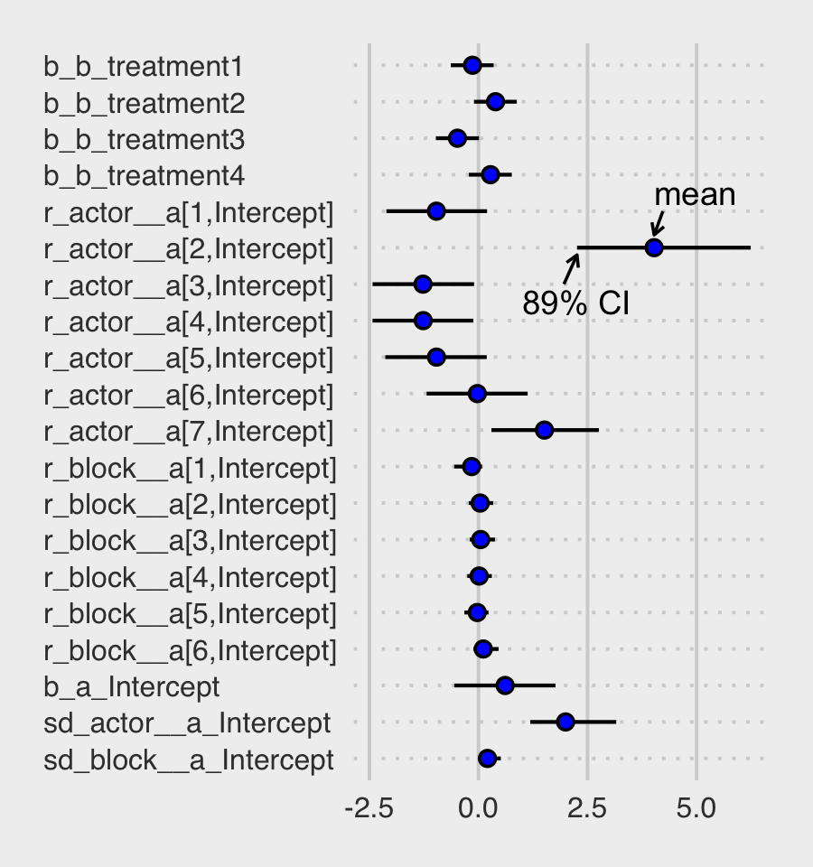
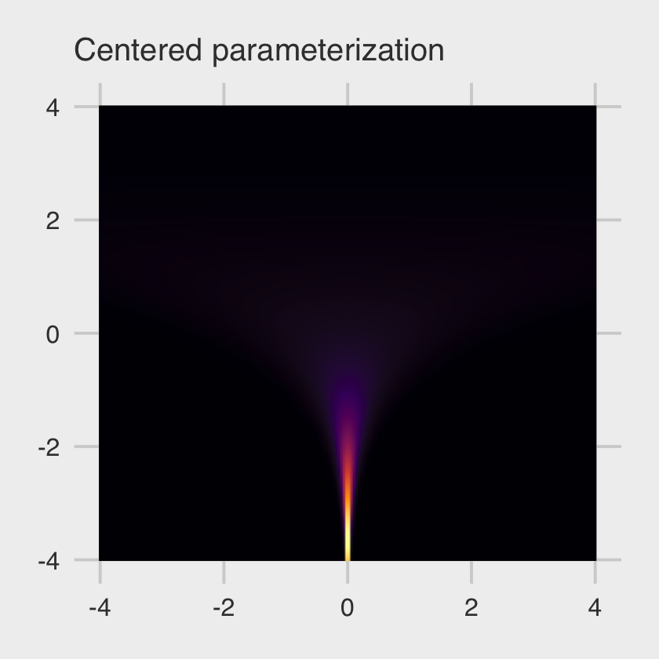
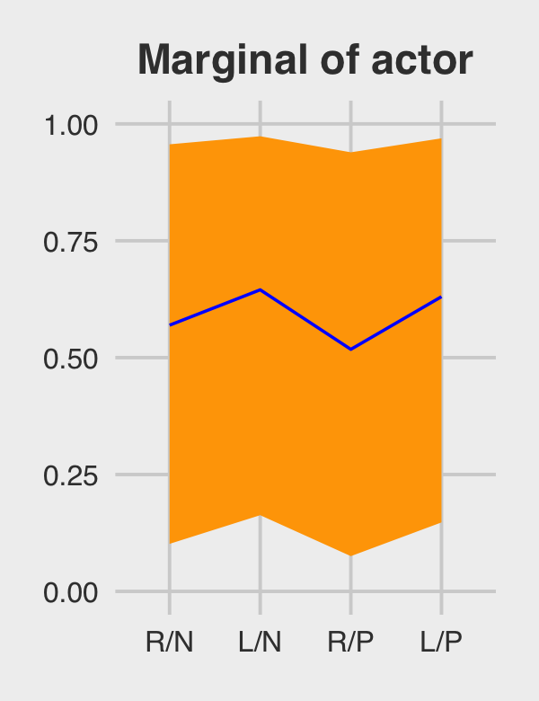
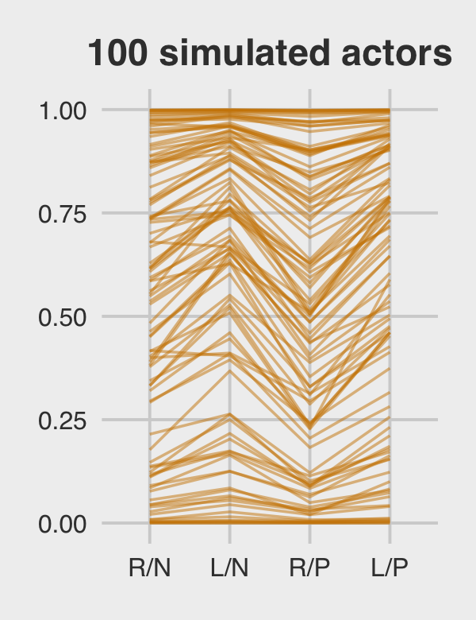
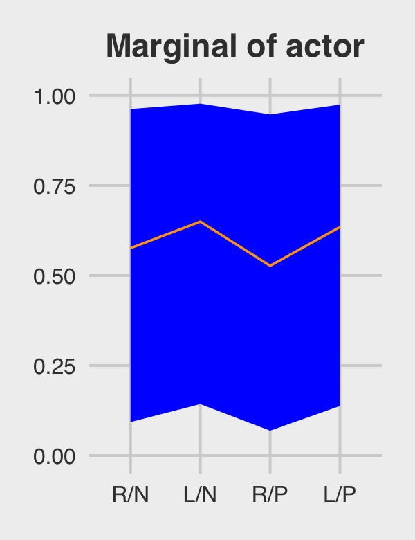
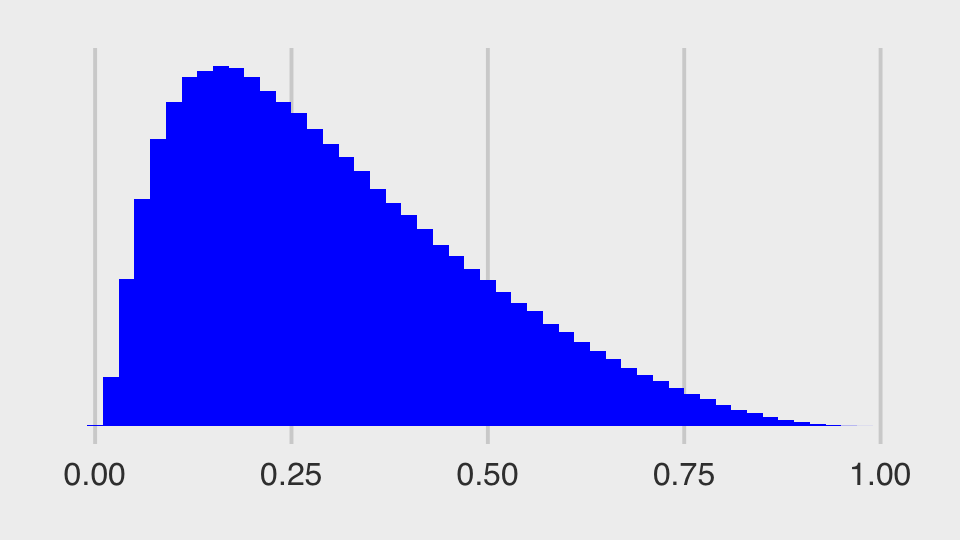

library(brms)
data(reedfrogs, package = "rethinking")
d <- reedfrogs
rm(reedfrogs)13 Models With Memory
Multilevel models… remember features of each cluster in the data as they learn about all of the clusters. Depending upon the variation among clusters, which is learned from the data as well, the model pools information across clusters. This pooling tends to improve estimates about each cluster. This improved estimation leads to several, more pragmatic sounding, benefits of the multilevel approach. (McElreath, 2020, p. 400, emphasis in the original)
These benefits include:
- better estimates for repeated sampling (i.e., in longitudinal data),
- better estimates when there are imbalances among subsamples,
- estimates of the variation across subsamples, and
- avoiding simplistic averaging by retaining variation across subsamples.
All of these benefits flow out of the same strategy and model structure. You learn one basic design and you get all of this for free.
When it comes to regression, multilevel regression deserves to be the default approach. There are certainly contexts in which it would be better to use an old-fashioned single-level model. But the contexts in which multilevel models are superior are much more numerous. It is better to begin to build a multilevel analysis, and then realize it’s unnecessary, than to overlook it. And once you grasp the basic multilevel strategy, it becomes much easier to incorporate related tricks such as allowing for measurement error in the data and even modeling missing data itself (Chapter 15). (p. 400)
I’m totally on board with this. After learning about the multilevel model, I see it everywhere. For more on the sentiment it should be the default, check out McElreath’s blog post, Multilevel regression as default.
13.1 Example: Multilevel tadpoles
Let’s load the reedfrogs data (see Vonesh & Bolker, 2005) and fire up brms.
Go ahead and acquaint yourself with the reedfrogs.
library(tidyverse)
d |>
glimpse()Rows: 48
Columns: 5
$ density <int> 10, 10, 10, 10, 10, 10, 10, 10, 10, 10, 10, 10, 10, 10, 10, 10, 25, 25, 25, 25, 25, 25, 25, 25, 25, 25, 25, 25,…
$ pred <fct> no, no, no, no, no, no, no, no, pred, pred, pred, pred, pred, pred, pred, pred, no, no, no, no, no, no, no, no,…
$ size <fct> big, big, big, big, small, small, small, small, big, big, big, big, small, small, small, small, big, big, big, …
$ surv <int> 9, 10, 7, 10, 9, 9, 10, 9, 4, 9, 7, 6, 7, 5, 9, 9, 24, 23, 22, 25, 23, 23, 23, 21, 6, 13, 4, 9, 13, 20, 8, 10, …
$ propsurv <dbl> 0.9000000, 1.0000000, 0.7000000, 1.0000000, 0.9000000, 0.9000000, 1.0000000, 0.9000000, 0.4000000, 0.9000000, 0…Making the tank cluster variable is easy.
d <- d |>
mutate(tank = 1:nrow(d))Here’s the formula for the un-pooled model in which each tank gets its own intercept:
\[\begin{align*} \text{surv}_i & \sim \operatorname{Binomial}(n_i, p_i) \\ \operatorname{logit}(p_i) & = \alpha_{\text{tank}[i]} \\ \alpha_j & \sim \operatorname{Normal} (0, 1.5) & \text{for } j = 1, \dots, 48, \end{align*}\]
where \(n_i\) is indexed by the density column. Its values are distributed like so.
d |>
count(density) density n
1 10 16
2 25 16
3 35 16Now fit this simple aggregated binomial model much like we practiced in Section 11.1.3.
b13.1 <- brm(
data = d,
family = binomial,
surv | trials(density) ~ 0 + factor(tank),
prior(normal(0, 1.5), class = b),
iter = 2000, warmup = 1000, chains = 4, cores = 4,
seed = 13,
file = "fits/b13.01")We don’t need a depth=2 argument to discover we have 48 different intercepts. The default print() behavior will do.
print(b13.1) Family: binomial
Links: mu = logit
Formula: surv | trials(density) ~ 0 + factor(tank)
Data: d (Number of observations: 48)
Draws: 4 chains, each with iter = 2000; warmup = 1000; thin = 1;
total post-warmup draws = 4000
Regression Coefficients:
Estimate Est.Error l-95% CI u-95% CI Rhat Bulk_ESS Tail_ESS
factortank1 1.72 0.75 0.36 3.28 1.00 6727 2922
factortank2 2.39 0.87 0.85 4.24 1.00 5009 2249
factortank3 0.75 0.63 -0.45 2.06 1.00 5975 2721
factortank4 2.41 0.90 0.84 4.40 1.00 5413 2712
factortank5 1.72 0.78 0.34 3.36 1.00 6346 2332
factortank6 1.73 0.75 0.36 3.39 1.00 5673 2882
factortank7 2.40 0.87 0.87 4.24 1.00 6013 2773
factortank8 1.71 0.76 0.32 3.29 1.00 5652 2920
factortank9 -0.37 0.61 -1.60 0.80 1.00 5643 2887
factortank10 1.70 0.75 0.39 3.31 1.00 6262 2260
factortank11 0.74 0.63 -0.46 2.05 1.00 6269 2696
factortank12 0.39 0.63 -0.82 1.64 1.00 5644 2858
factortank13 0.76 0.66 -0.46 2.12 1.00 5430 2848
factortank14 0.01 0.61 -1.16 1.22 1.00 6416 3038
factortank15 1.72 0.76 0.34 3.34 1.00 5830 2712
factortank16 1.72 0.78 0.36 3.42 1.00 5907 2726
factortank17 2.54 0.67 1.36 4.01 1.00 4795 2497
factortank18 2.14 0.61 1.05 3.44 1.00 6054 2619
factortank19 1.80 0.54 0.83 2.92 1.00 6042 3107
factortank20 3.09 0.79 1.72 4.82 1.00 5402 2768
factortank21 2.15 0.62 1.05 3.49 1.00 5870 2806
factortank22 2.14 0.57 1.12 3.36 1.00 5687 2898
factortank23 2.13 0.59 1.10 3.41 1.00 5338 3008
factortank24 1.55 0.51 0.61 2.60 1.00 6469 3086
factortank25 -1.11 0.45 -2.04 -0.26 1.00 5811 2806
factortank26 0.08 0.38 -0.65 0.81 1.00 5386 3054
factortank27 -1.54 0.49 -2.54 -0.63 1.00 5931 2981
factortank28 -0.55 0.40 -1.36 0.20 1.00 5774 2862
factortank29 0.07 0.40 -0.72 0.84 1.00 5880 2852
factortank30 1.32 0.48 0.44 2.30 1.00 5203 2097
factortank31 -0.72 0.42 -1.55 0.09 1.00 7194 3016
factortank32 -0.39 0.42 -1.23 0.40 1.00 5849 2924
factortank33 2.85 0.67 1.71 4.33 1.00 5415 2328
factortank34 2.47 0.59 1.42 3.76 1.00 5835 2769
factortank35 2.46 0.57 1.46 3.68 1.00 5369 2660
factortank36 1.91 0.49 1.02 2.97 1.00 6166 2748
factortank37 1.91 0.49 1.00 2.93 1.00 6123 2860
factortank38 3.37 0.77 2.05 5.04 1.00 5313 2355
factortank39 2.46 0.58 1.43 3.72 1.00 6008 2835
factortank40 2.16 0.53 1.21 3.32 1.00 5945 2463
factortank41 -1.91 0.49 -2.95 -1.02 1.00 6293 2323
factortank42 -0.63 0.35 -1.32 0.04 1.00 6646 3016
factortank43 -0.51 0.34 -1.19 0.16 1.00 5326 3035
factortank44 -0.39 0.33 -1.05 0.24 1.00 6226 3190
factortank45 0.52 0.35 -0.15 1.22 1.00 7301 2643
factortank46 -0.63 0.35 -1.34 0.04 1.00 5798 2948
factortank47 1.91 0.49 1.03 2.91 1.00 5941 2893
factortank48 -0.07 0.34 -0.74 0.59 1.00 7503 2958
Draws were sampled using sampling(NUTS). For each parameter, Bulk_ESS
and Tail_ESS are effective sample size measures, and Rhat is the potential
scale reduction factor on split chains (at convergence, Rhat = 1).This is much like the models we’ve fit in earlier chapters using McElreath’s index approach, but on steroids. It’ll be instructive to take a look at distribution of the \(\alpha_j\) parameters in density plots. We’ll plot them in both their log-odds and probability metrics.
For kicks and giggles, let’s use a FiveThirtyEight-like theme for this chapter’s plots. An easy way to do so is with help from the ggthemes package.
library(ggthemes)
library(tidybayes)
# Change the default
theme_set(theme_gray() + theme_fivethirtyeight())
tibble(estimate = fixef(b13.1)[, 1]) |>
mutate(p = plogis(estimate)) |>
pivot_longer(estimate:p) |>
mutate(name = if_else(name == "p", "expected survival probability", "expected survival log-odds")) |>
ggplot(aes(x = value, fill = name)) +
stat_dots(size = 0) +
scale_y_continuous(breaks = NULL) +
scale_fill_manual(values = c("orange1", "orange4")) +
labs(title = "Tank-level intercepts from the no-pooling model",
subtitle = "Notice how inspecting the distributions of the posterior means can offer insights you\nmight not get if you looked at them one at a time.") +
facet_wrap(~ name, scales = "free_x") +
theme(legend.position = "none",
panel.grid = element_blank())
Even though it seems like we can derive important insights from how the tank-level intercepts are distributed, that information is not explicitly encoded in the statistical model. Keep that in mind as we now consider the multilevel alternative. Its formula is
\[\begin{align*} \text{surv}_i & \sim \operatorname{Binomial}(n_i, p_i) \\ \operatorname{logit}(p_i) & = \alpha_{\text{tank}[i]} \\ \alpha_j & \sim \operatorname{Normal}(\color{#CD8500}{\bar \alpha}, \color{#CD8500} \sigma) \\ \color{#CD8500}{\bar \alpha} & \color{#CD8500} \sim \color{#CD8500}{\operatorname{Normal}(0, 1.5)} \\ \color{#CD8500} \sigma & \color{#CD8500} \sim \color{#CD8500}{\operatorname{Exponential}(1)}, \end{align*}\]
where
the prior for the tank intercepts is now a function of two parameters, \(\bar \alpha\) and \(\sigma\). You can say \(\bar \alpha\) like “bar alpha.” The bar means average. These two parameters inside the prior is where the “multi” in multilevel arises. The Gaussian distribution with mean \(\bar \alpha\) standard deviation \(\sigma\) is the prior for each tank’s intercept. But that prior itself has priors for \(\bar \alpha\) and \(\sigma\). So there are two levels in the model, each resembling a simpler model. (p. 403, emphasis in the original)
With brms, you might specify the corresponding multilevel model like this.
b13.2 <- brm(
data = d,
family = binomial,
surv | trials(density) ~ 1 + (1 | tank),
prior = c(prior(normal(0, 1.5), class = Intercept), # alpha bar
prior(exponential(1), class = sd)), # sigma
iter = 5000, warmup = 1000, chains = 4, cores = 4,
sample_prior = "yes",
seed = 13,
file = "fits/b13.02")The syntax for the varying effects follows the lme4 style, ( <varying parameter(s)> | <grouping variable(s)> ). In this case (1 | tank) indicates only the intercept, 1, varies by tank. The extent to which parameters vary is controlled by the prior, prior(exponential(1), class = sd), which is parameterized in the standard deviation metric. Do note that last part. It’s common in multilevel software to model in the variance metric, instead. For technical reasons we won’t really get into until Chapter 14, Stan parameterizes this as a standard deviation.
Let’s compute the WAIC comparisons.
b13.1 <- add_criterion(b13.1, criterion = "waic")
b13.2 <- add_criterion(b13.2, criterion = "waic")
w <- loo_compare(b13.1, b13.2, criterion = "waic")
print(w, simplify = F) elpd_diff se_diff elpd_waic se_elpd_waic p_waic se_p_waic waic se_waic
b13.2 0.0 0.0 -100.1 3.7 20.9 0.8 200.1 7.4
b13.1 -6.9 1.8 -107.0 2.3 25.3 1.2 214.0 4.7 The se_diff is small relative to the elpd_diff. If we convert the \(\text{elpd}\) difference to the WAIC metric, the message stays the same.
cbind(waic_diff = w[, 1] * -2,
se = w[, 2] * 2) waic_diff se
b13.2 0.00000 0.000000
b13.1 13.89515 3.601405Here are the WAIC weights.
model_weights(b13.1, b13.2, weights = "waic") |>
round(digits = 2)b13.1 b13.2
0 1 I’m not going to show it here, but if you’d like a challenge, try comparing the models with the PSIS-LOO. You’ll get some great practice with high pareto_k values and the moment matching for problematic observations (Paananen, Piironen, et al., 2020; see Paananen, Bürkner, et al., 2020).
But back on track, McElreath commented on the number of effective parameters for the two models. This, recall, is listed in the column for \(p_\text{WAIC}\).
w[, "p_waic"] b13.2 b13.1
20.94163 25.26743 And indeed, even though our multilevel model (b13.2) technically had two more parameters than the conventional single-level model (b13.1), its \(p_\text{WAIC}\) is substantially smaller, due to the regularizing level-2 \(\sigma\) parameter. Speaking of which, let’s examine the model summary.
print(b13.2) Family: binomial
Links: mu = logit
Formula: surv | trials(density) ~ 1 + (1 | tank)
Data: d (Number of observations: 48)
Draws: 4 chains, each with iter = 5000; warmup = 1000; thin = 1;
total post-warmup draws = 16000
Multilevel Hyperparameters:
~tank (Number of levels: 48)
Estimate Est.Error l-95% CI u-95% CI Rhat Bulk_ESS Tail_ESS
sd(Intercept) 1.62 0.21 1.26 2.08 1.00 4231 7747
Regression Coefficients:
Estimate Est.Error l-95% CI u-95% CI Rhat Bulk_ESS Tail_ESS
Intercept 1.35 0.26 0.85 1.87 1.00 2380 4074
Draws were sampled using sampling(NUTS). For each parameter, Bulk_ESS
and Tail_ESS are effective sample size measures, and Rhat is the potential
scale reduction factor on split chains (at convergence, Rhat = 1).This time we don’t get a list of 48 separate tank-level parameters. However, we do get a description of their distribution in terms of \(\bar \alpha\) (i.e., Intercept) and \(\sigma\) (i.e., sd(Intercept)). If you’d like the actual tank-level parameters, don’t worry; they’re coming in Figure 13.1. We’ll need to do a little prep work, though.
post <- as_draws_df(b13.2)
post_mdn <- coef(b13.2, robust = T)$tank[, , ] |>
data.frame() |>
bind_cols(d) |>
mutate(post_mdn = plogis(Estimate))
head(post_mdn) Estimate Est.Error Q2.5 Q97.5 density pred size surv propsurv tank post_mdn
1 2.0845608 0.8526477 0.6141390 4.061139 10 no big 9 0.9 1 0.8893935
2 2.9897777 1.0718215 1.1857960 5.561650 10 no big 10 1.0 2 0.9521102
3 0.9711338 0.6601700 -0.2474613 2.384460 10 no big 7 0.7 3 0.7253454
4 2.9724097 1.0907821 1.1761693 5.561312 10 no big 10 1.0 4 0.9513120
5 2.0781692 0.8624828 0.5942470 4.053401 10 no small 9 0.9 5 0.8887632
6 2.0778971 0.8486711 0.5925602 4.056686 10 no small 9 0.9 6 0.8887363Here’s the ggplot2 code to reproduce Figure 13.1.
post_mdn |>
ggplot(aes(x = tank)) +
geom_hline(yintercept = plogis(median(post$b_Intercept)), linetype = 2, linewidth = 1/4) +
geom_vline(xintercept = c(16.5, 32.5), linewidth = 1/4, color = "grey25") +
geom_point(aes(y = propsurv), color = "orange2") +
geom_point(aes(y = post_mdn), shape = 1) +
annotate(geom = "text",
x = c(8, 16 + 8, 32 + 8), y = 0,
label = c("small tanks", "medium tanks", "large tanks")) +
scale_x_continuous(breaks = c(1, 16, 32, 48)) +
scale_y_continuous(breaks = 0:5 / 5, limits = c(0, 1)) +
labs(title = "Multilevel shrinkage!",
subtitle = "The empirical proportions are in orange while the model-\nimplied proportions are the black circles. The dashed line is\nthe model-implied average survival proportion.") +
theme(panel.grid.major = element_blank())
Here is the code for our version of Figure 13.2.a, where we visualize the model-implied population distribution of log-odds survival (i.e., the population distribution yielding all the tank-level intercepts).
# This makes the output of `slice_sample()` reproducible
set.seed(13)
p1 <- post |>
slice_sample(n = 100) |>
expand_grid(x = seq(from = -4, to = 5, length.out = 100)) |>
mutate(density = dnorm(x, mean = b_Intercept, sd = sd_tank__Intercept)) |>
ggplot(aes(x = x, y = density, group = .draw)) +
geom_line(alpha = 0.2, color = "orange2") +
scale_y_continuous(NULL, breaks = NULL) +
labs(title = "Population survival distribution",
subtitle = "log-odds scale") +
coord_cartesian(xlim = c(-3, 4))Now we make our Figure 13.2.b and then bind the two subplots with patchwork.
set.seed(13)
p2 <- post |>
slice_sample(n = 8000, replace = T) |>
mutate(sim_tanks = rnorm(n(), mean = b_Intercept, sd = sd_tank__Intercept)) |>
ggplot(aes(x = plogis(sim_tanks))) +
geom_density(linewidth = 0, fill = "orange2", adjust = 0.1) +
scale_y_continuous(NULL, breaks = NULL) +
labs(title = "Probability of survival",
subtitle = "transformed by the inverse-logit function")
library(patchwork)
(p1 + p2) &
theme(plot.title = element_text(size = 12),
plot.subtitle = element_text(size = 10))
Both plots show different ways of expressing the model uncertainty in terms of both location \(\alpha\) and scale \(\sigma\).
13.1.0.1 Rethinking: Varying intercepts as over-dispersion
In the previous chapter (Section 12.1), the beta-binomial and gamma-Poisson models were presented as ways for coping with over-dispersion of count data. Varying intercepts accomplish the same thing, allowing count outcomes to be over-dispersed. They accomplish this, because when each observed count gets its own unique intercept, but these intercepts are pooled through a common distribution, the predictions expect over-dispersion just like a beta-binomial or gamma-Poisson model would. Multilevel models are also mixtures. Compared to a beta-binomial or gamma-Poisson model, a binomial or Poisson model with a varying intercept on every observed outcome will often be easier to estimate and easier to extend. (p. 407, emphasis in the original)
13.1.0.2 Overthinking: Prior for variance components
Yep, you can use the half-Normal distribution for your priors in brms, too. Here it is for model b13.2.
b13.2b <- update(
b13.2,
prior = c(prior(normal(0, 1.5), class = Intercept),
prior(normal(0, 1), class = sd)),
iter = 5000, warmup = 1000, chains = 4, cores = 4,
sample_prior = "yes",
seed = 13,
file = "fits/b13.02b")McElreath mentioned how one might set a lower bound at zero for the half-Normal prior when using rethinking::ulam(). There’s no need to do so when using brms::brm(). The lower bounds for priors of class = sd are already set to zero by default.
Check the model summary.
print(b13.2b) Family: binomial
Links: mu = logit
Formula: surv | trials(density) ~ 1 + (1 | tank)
Data: d (Number of observations: 48)
Draws: 4 chains, each with iter = 5000; warmup = 1000; thin = 1;
total post-warmup draws = 16000
Multilevel Hyperparameters:
~tank (Number of levels: 48)
Estimate Est.Error l-95% CI u-95% CI Rhat Bulk_ESS Tail_ESS
sd(Intercept) 1.59 0.20 1.24 2.03 1.00 4568 8722
Regression Coefficients:
Estimate Est.Error l-95% CI u-95% CI Rhat Bulk_ESS Tail_ESS
Intercept 1.35 0.25 0.87 1.84 1.00 3673 6410
Draws were sampled using sampling(NUTS). For each parameter, Bulk_ESS
and Tail_ESS are effective sample size measures, and Rhat is the potential
scale reduction factor on split chains (at convergence, Rhat = 1).If you’re curious how the exponential and half-Normal priors compare to one another and to their posteriors, you might just plot.
# For annotation
text <- tibble(
value = c(0.5, 2.4),
density = c(1, 1.85),
distribution = factor(c("prior", "posterior"), levels = c("prior", "posterior")),
prior = "Exponential(1)")
# Gather up and wrangle the prior and posterior draws
tibble(`prior_Exponential(1)` = prior_draws(b13.2) |> pull(sd_tank),
`posterior_Exponential(1)` = as_draws_df(b13.2) |> pull(sd_tank__Intercept),
`prior_Half-Normal(0, 1)` = prior_draws(b13.2b) |> pull(sd_tank),
`posterior_Half-Normal(0, 1)` = as_draws_df(b13.2b) |> pull(sd_tank__Intercept)) |>
pivot_longer(everything(),
names_sep = "_",
names_to = c("distribution", "prior")) |>
mutate(distribution = factor(distribution, levels = c("prior", "posterior"))) |>
# Plot
ggplot(aes(x = value, fill = distribution)) +
geom_density(linewidth = 0, alpha = 2/3, adjust = 0.25) +
geom_text(data = text,
aes(y = density, label = distribution, color = distribution)) +
scale_y_continuous(NULL, breaks = NULL) +
scale_fill_manual(NULL, values = c("orange4", "orange2")) +
scale_color_manual(NULL, values = c("orange4", "orange2")) +
labs(subtitle = expression(Hierarchical~sigma~parameter)) +
coord_cartesian(xlim = c(0, 4)) +
facet_wrap(~ prior) +
theme(legend.position = "none")
By the way, this is why we set iter = 5000 and sample_prior = "yes" for the last two models. Neither were necessary to fit the models, but both helped us out with this plot.
13.2 Varying effects and the underfitting/overfitting trade-off
Varying intercepts are just regularized estimates, but adaptively regularized by estimating how diverse the clusters are while estimating the features of each cluster. This fact is not easy to grasp….
A major benefit of using varying effects estimates, instead of the empirical raw estimates, is that they provide more accurate estimates of the individual cluster (tank) intercepts. On average, the varying effects actually provide a better estimate of the individual tank (cluster) means. The reason that the varying intercepts provide better estimates is that they do a better job of trading off underfitting and overfitting. (p. 408)
In this section, we explicate this by contrasting three perspectives:
- complete pooling (i.e., a single-\(\alpha\) model),
- no pooling (i.e., the single-level \(\alpha_{\text{tank}[i]}\) model), and
- partial pooling [i.e., the multilevel model for which \(\alpha_j \sim \operatorname{Normal} (\bar \alpha, \sigma)\)].
To demonstrate [the magic of the multilevel model], we’ll simulate some tadpole data. That way, we’ll know the true per-pond survival probabilities. Then we can compare the no-pooling estimates to the partial pooling estimates, by computing how close each gets to the true values they are trying to estimate. The rest of this section shows how to do such a simulation. (p. 409)
13.2.1 The model
The simulation formula should look familiar.
\[\begin{align*} \text{surv}_i & \sim \operatorname{Binomial}(n_i, p_i) \\ \operatorname{logit}(p_i) & = \alpha_{\text{pond}[i]} \\ \alpha_j & \sim \operatorname{Normal}(\bar \alpha, \sigma) \\ \bar \alpha & \sim \operatorname{Normal}(0, 1.5) \\ \sigma & \sim \operatorname{Exponential}(1) \end{align*}\]
13.2.2 Assign values to the parameters
Here we follow along with McElreath and “assign specific values representative of the actual tadpole data” (p. 409). Because he included a set.seed() line in his R code 13.8, our results should match his exactly.
a_bar <- 1.5
sigma <- 1.5
n_ponds <- 60
set.seed(5005)
dsim <- tibble(
pond = 1:n_ponds,
ni = rep(c(5, 10, 25, 35), each = n_ponds / 4) |> as.integer(),
true_a = rnorm(n = n_ponds, mean = a_bar, sd = sigma))
head(dsim)# A tibble: 6 × 3
pond ni true_a
<int> <int> <dbl>
1 1 5 0.567
2 2 5 1.99
3 3 5 -0.138
4 4 5 1.86
5 5 5 3.91
6 6 5 1.95 McElreath twice urged us to inspect the contents of this simulation. In addition to looking at the data with head(), we might well plot.
dsim |>
mutate(ni = factor(ni)) |>
ggplot(aes(x = true_a, y = ni)) +
stat_dotsinterval(fill = "orange2", slab_size = 0, .width = 0.5) +
ggtitle("Log-odds varying by # tadpoles per pond") +
theme(plot.title = element_text(size = 14))
13.2.3 Sumulate survivors
Each pond \(i\) has \(n_i\) potential survivors, and nature flips each tadpole’s coin, so to speak, with probability of survival \(p_i\). This probability \(p_i\) is implied by the model definition, and is equal to:
\[p_i = \frac{\exp (\alpha_i)}{1 + \exp (\alpha_i)}\]
The model uses a logit link, and so the probability is defined by the [
plogis()] function. (p. 411)
Although McElreath shared his set.seed() number in the last section, he didn’t share it for this bit. We’ll go ahead and carry over the one from last time. However, in a moment we’ll see this clearly wasn’t the one he used here. As a consequence, our results will deviate a bit from his.
set.seed(5005)
dsim <- dsim |>
mutate(si = rbinom(n = n(), prob = plogis(true_a), size = ni))
dsim# A tibble: 60 × 4
pond ni true_a si
<int> <int> <dbl> <int>
1 1 5 0.567 4
2 2 5 1.99 4
3 3 5 -0.138 3
4 4 5 1.86 5
5 5 5 3.91 5
6 6 5 1.95 4
7 7 5 1.49 4
8 8 5 2.52 4
9 9 5 2.18 3
10 10 5 2.05 4
# ℹ 50 more rows13.2.4 Compute the no-pooling estimates
The no-pooling estimates (i.e., \(\alpha_{\text{tank}[i]}\)) are the results of simple algebra.
dsim <- dsim |>
mutate(p_nopool = si / ni)
dsim# A tibble: 60 × 5
pond ni true_a si p_nopool
<int> <int> <dbl> <int> <dbl>
1 1 5 0.567 4 0.8
2 2 5 1.99 4 0.8
3 3 5 -0.138 3 0.6
4 4 5 1.86 5 1
5 5 5 3.91 5 1
6 6 5 1.95 4 0.8
7 7 5 1.49 4 0.8
8 8 5 2.52 4 0.8
9 9 5 2.18 3 0.6
10 10 5 2.05 4 0.8
# ℹ 50 more rows“These are the same no-pooling estimates you’d get by fitting a model with a dummy variable for each pond and flat priors that induce no regularization” (p. 411). That is, these are the same kinds of estimates we got back when we fit b13.1.
13.2.5 Compute the partial-pooling estimates
Fit the multilevel (partial-pooling) model.
b13.3 <- brm(
data = dsim,
family = binomial,
si | trials(ni) ~ 1 + (1 | pond),
prior = c(prior(normal(0, 1.5), class = Intercept),
prior(exponential(1), class = sd)),
iter = 2000, warmup = 1000, chains = 4, cores = 4,
seed = 13,
file = "fits/b13.03")Here’s our standard brms summary.
print(b13.3) Family: binomial
Links: mu = logit
Formula: si | trials(ni) ~ 1 + (1 | pond)
Data: dsim (Number of observations: 60)
Draws: 4 chains, each with iter = 2000; warmup = 1000; thin = 1;
total post-warmup draws = 4000
Multilevel Hyperparameters:
~pond (Number of levels: 60)
Estimate Est.Error l-95% CI u-95% CI Rhat Bulk_ESS Tail_ESS
sd(Intercept) 1.50 0.20 1.15 1.93 1.00 1401 2469
Regression Coefficients:
Estimate Est.Error l-95% CI u-95% CI Rhat Bulk_ESS Tail_ESS
Intercept 1.48 0.23 1.05 1.95 1.00 1076 2151
Draws were sampled using sampling(NUTS). For each parameter, Bulk_ESS
and Tail_ESS are effective sample size measures, and Rhat is the potential
scale reduction factor on split chains (at convergence, Rhat = 1).I’m not aware that you can use McElreath’s depth=2 trick in brms for summary() or print(). However, you can get most of that information and more with the Stan-like summary using the $fit syntax.
b13.3$fitInference for Stan model: anon_model.
4 chains, each with iter=2000; warmup=1000; thin=1;
post-warmup draws per chain=1000, total post-warmup draws=4000.
mean se_mean sd 2.5% 25% 50% 75% 97.5% n_eff Rhat
b_Intercept 1.48 0.01 0.23 1.05 1.32 1.47 1.63 1.95 1076 1.00
sd_pond__Intercept 1.50 0.01 0.20 1.15 1.36 1.48 1.62 1.93 1357 1.01
Intercept 1.48 0.01 0.23 1.05 1.32 1.47 1.63 1.95 1076 1.00
r_pond[1,Intercept] 0.09 0.01 0.94 -1.66 -0.54 0.05 0.71 2.05 6629 1.00
r_pond[2,Intercept] 0.09 0.01 0.94 -1.60 -0.56 0.03 0.70 2.07 7378 1.00
r_pond[3,Intercept] -0.70 0.01 0.88 -2.39 -1.27 -0.73 -0.14 1.12 7412 1.00
r_pond[4,Intercept] 1.13 0.01 1.09 -0.79 0.35 1.07 1.81 3.54 6255 1.00
r_pond[5,Intercept] 1.14 0.01 1.15 -0.86 0.36 1.03 1.86 3.66 7031 1.00
r_pond[6,Intercept] 0.08 0.01 0.95 -1.65 -0.57 0.05 0.66 2.10 6449 1.00
r_pond[7,Intercept] 0.11 0.01 0.97 -1.68 -0.55 0.06 0.71 2.16 5907 1.00
r_pond[8,Intercept] 0.09 0.01 0.95 -1.61 -0.58 0.06 0.73 1.99 5613 1.00
r_pond[9,Intercept] -0.68 0.01 0.86 -2.32 -1.24 -0.70 -0.13 1.12 5743 1.00
r_pond[10,Intercept] 0.09 0.01 0.94 -1.63 -0.55 0.06 0.67 2.12 7382 1.00
r_pond[11,Intercept] 1.13 0.01 1.15 -0.86 0.31 1.03 1.85 3.59 5931 1.00
r_pond[12,Intercept] -1.36 0.01 0.84 -3.01 -1.91 -1.37 -0.82 0.27 7206 1.00
r_pond[13,Intercept] 1.14 0.01 1.14 -0.86 0.35 1.06 1.89 3.47 6121 1.00
r_pond[14,Intercept] 0.08 0.01 0.93 -1.62 -0.56 0.03 0.66 2.01 6706 1.00
r_pond[15,Intercept] 1.12 0.01 1.14 -0.91 0.31 1.07 1.85 3.51 7435 1.00
r_pond[16,Intercept] -0.85 0.01 0.64 -2.05 -1.29 -0.87 -0.43 0.47 4031 1.00
r_pond[17,Intercept] -1.97 0.01 0.66 -3.37 -2.40 -1.95 -1.53 -0.68 5017 1.00
r_pond[18,Intercept] -1.23 0.01 0.64 -2.47 -1.66 -1.22 -0.79 0.06 4629 1.00
r_pond[19,Intercept] -1.24 0.01 0.66 -2.56 -1.68 -1.24 -0.79 0.05 5152 1.00
r_pond[20,Intercept] -0.43 0.01 0.70 -1.77 -0.91 -0.45 0.00 1.01 5574 1.00
r_pond[21,Intercept] -1.59 0.01 0.63 -2.84 -2.01 -1.58 -1.17 -0.34 4659 1.00
r_pond[22,Intercept] 0.66 0.01 0.86 -0.88 0.07 0.60 1.18 2.55 5591 1.00
r_pond[23,Intercept] 1.54 0.01 1.08 -0.38 0.77 1.44 2.20 4.02 5819 1.00
r_pond[24,Intercept] -0.85 0.01 0.65 -2.09 -1.29 -0.87 -0.44 0.48 4425 1.00
r_pond[25,Intercept] 0.03 0.01 0.73 -1.27 -0.46 0.01 0.49 1.58 5744 1.00
r_pond[26,Intercept] 0.66 0.01 0.86 -0.90 0.07 0.62 1.21 2.48 6059 1.00
r_pond[27,Intercept] 0.04 0.01 0.77 -1.39 -0.48 0.01 0.52 1.65 5419 1.00
r_pond[28,Intercept] -0.44 0.01 0.70 -1.72 -0.93 -0.46 0.03 0.96 5242 1.00
r_pond[29,Intercept] -0.84 0.01 0.64 -2.08 -1.28 -0.86 -0.43 0.44 5404 1.00
r_pond[30,Intercept] -0.43 0.01 0.71 -1.75 -0.91 -0.44 0.04 0.97 4563 1.00
r_pond[31,Intercept] 1.41 0.01 0.82 -0.02 0.83 1.36 1.90 3.22 5761 1.00
r_pond[32,Intercept] 0.54 0.01 0.61 -0.59 0.12 0.51 0.91 1.80 4727 1.00
r_pond[33,Intercept] 1.40 0.01 0.75 0.05 0.86 1.35 1.89 3.00 4635 1.00
r_pond[34,Intercept] -0.45 0.01 0.50 -1.43 -0.78 -0.45 -0.12 0.54 3287 1.00
r_pond[35,Intercept] -0.98 0.01 0.46 -1.87 -1.28 -0.97 -0.68 -0.08 2724 1.00
r_pond[36,Intercept] 2.12 0.01 0.99 0.47 1.42 2.03 2.70 4.34 4609 1.00
r_pond[37,Intercept] -3.38 0.01 0.61 -4.68 -3.75 -3.34 -2.96 -2.28 3598 1.00
r_pond[38,Intercept] -2.08 0.01 0.47 -3.03 -2.38 -2.08 -1.76 -1.14 3120 1.00
r_pond[39,Intercept] -0.98 0.01 0.47 -1.87 -1.30 -0.98 -0.67 -0.03 3074 1.00
r_pond[40,Intercept] 2.09 0.01 0.94 0.47 1.46 2.00 2.67 4.14 5770 1.00
r_pond[41,Intercept] 2.10 0.01 0.95 0.51 1.43 2.00 2.68 4.20 4919 1.00
r_pond[42,Intercept] 0.54 0.01 0.61 -0.55 0.11 0.50 0.93 1.84 3953 1.00
r_pond[43,Intercept] -1.75 0.01 0.46 -2.66 -2.06 -1.74 -1.45 -0.88 2981 1.00
r_pond[44,Intercept] -0.63 0.01 0.47 -1.52 -0.97 -0.64 -0.31 0.31 2922 1.00
r_pond[45,Intercept] -2.63 0.01 0.51 -3.69 -2.95 -2.60 -2.29 -1.70 3416 1.00
r_pond[46,Intercept] -1.44 0.01 0.40 -2.23 -1.71 -1.44 -1.18 -0.66 2546 1.00
r_pond[47,Intercept] 2.32 0.01 0.92 0.75 1.69 2.23 2.88 4.42 4424 1.00
r_pond[48,Intercept] 2.33 0.01 0.92 0.77 1.71 2.24 2.87 4.39 4950 1.00
r_pond[49,Intercept] 0.14 0.01 0.50 -0.81 -0.20 0.13 0.46 1.14 3564 1.00
r_pond[50,Intercept] 0.14 0.01 0.49 -0.78 -0.19 0.12 0.45 1.14 3190 1.00
r_pond[51,Intercept] 0.14 0.01 0.48 -0.76 -0.18 0.14 0.47 1.11 3041 1.00
r_pond[52,Intercept] -1.45 0.01 0.40 -2.24 -1.72 -1.45 -1.18 -0.67 2401 1.00
r_pond[53,Intercept] 0.14 0.01 0.48 -0.77 -0.18 0.12 0.46 1.12 3074 1.00
r_pond[54,Intercept] 2.31 0.01 0.90 0.77 1.69 2.23 2.84 4.32 5291 1.00
r_pond[55,Intercept] -0.88 0.01 0.42 -1.68 -1.16 -0.88 -0.61 -0.07 2819 1.00
r_pond[56,Intercept] 1.69 0.01 0.76 0.31 1.17 1.63 2.15 3.28 4509 1.00
r_pond[57,Intercept] -0.77 0.01 0.43 -1.61 -1.05 -0.77 -0.48 0.08 2568 1.00
r_pond[58,Intercept] 1.20 0.01 0.64 0.07 0.74 1.18 1.62 2.57 5191 1.00
r_pond[59,Intercept] 0.35 0.01 0.50 -0.60 0.01 0.33 0.68 1.35 3766 1.00
r_pond[60,Intercept] 1.21 0.01 0.65 0.03 0.75 1.17 1.63 2.60 4938 1.00
lprior -3.32 0.01 0.28 -3.93 -3.48 -3.30 -3.13 -2.85 1361 1.00
lp__ -185.98 0.25 7.55 -202.04 -190.92 -185.50 -180.69 -172.22 908 1.00
Samples were drawn using NUTS(diag_e) at Fri Jan 9 13:10:10 2026.
For each parameter, n_eff is a crude measure of effective sample size,
and Rhat is the potential scale reduction factor on split chains (at
convergence, Rhat=1).As an aside, notice how this summary still reports the old-style n_eff values, rather than the updated Bulk_ESS and Tail_ESS values. I suspect this will change sometime soon. In the meantime, here’s a thread on the Stan Forums featuring members of the Stan team discussing how.
Let’s get ready for the diagnostic plot of Figure 13.3. First we add the partially-pooled estimates, as summarized by their posterior means, to the dsim data. Then we compute error values.
# We could have included this step in the block of code below, if we wanted to
p_partpool <- coef(b13.3)$pond[, , ] |>
data.frame() |>
transmute(p_partpool = plogis(Estimate))
dsim <- dsim |>
bind_cols(p_partpool) |>
mutate(p_true = plogis(true_a)) |>
mutate(nopool_error = abs(p_nopool - p_true),
partpool_error = abs(p_partpool - p_true)) |>
mutate(ni_factor = factor(ni,
levels = c(5, 10, 25, 35),
labels = c("tiny (5)", "small (10)", "medium (25)", "large (35)")))
dsim |>
glimpse()Rows: 60
Columns: 10
$ pond <int> 1, 2, 3, 4, 5, 6, 7, 8, 9, 10, 11, 12, 13, 14, 15, 16, 17, 18, 19, 20, 21, 22, 23, 24, 25, 26, 27, 28, 29…
$ ni <int> 5, 5, 5, 5, 5, 5, 5, 5, 5, 5, 5, 5, 5, 5, 5, 10, 10, 10, 10, 10, 10, 10, 10, 10, 10, 10, 10, 10, 10, 10, …
$ true_a <dbl> 0.56673123, 1.99002317, -0.13775688, 1.85676651, 3.91208800, 1.95414869, 1.48963805, 2.52407196, 2.178280…
$ si <int> 4, 4, 3, 5, 5, 4, 4, 4, 3, 4, 5, 2, 5, 4, 5, 6, 3, 5, 5, 7, 4, 9, 10, 6, 8, 9, 8, 7, 6, 7, 24, 22, 24, 18…
$ p_nopool <dbl> 0.80, 0.80, 0.60, 1.00, 1.00, 0.80, 0.80, 0.80, 0.60, 0.80, 1.00, 0.40, 1.00, 0.80, 1.00, 0.60, 0.30, 0.5…
$ p_partpool <dbl> 0.8270110, 0.8277081, 0.6861836, 0.9314136, 0.9317488, 0.8261827, 0.8303546, 0.8279099, 0.6888539, 0.8274…
$ p_true <dbl> 0.6380086, 0.8797456, 0.4656151, 0.8649196, 0.9803934, 0.8758983, 0.8160239, 0.9258122, 0.8982820, 0.8857…
$ nopool_error <dbl> 0.161991419, 0.079745589, 0.134384860, 0.135080387, 0.019606594, 0.075898310, 0.016023939, 0.125812219, 0…
$ partpool_error <dbl> 0.189002439, 0.052037481, 0.220568419, 0.066494026, 0.048644576, 0.049715648, 0.014330707, 0.097902333, 0…
$ ni_factor <fct> tiny (5), tiny (5), tiny (5), tiny (5), tiny (5), tiny (5), tiny (5), tiny (5), tiny (5), tiny (5), tiny …Here is our code for Figure 13.3. The extra data processing for dfline is how we get the values necessary for the horizontal summary lines.
dfline <- dsim |>
select(ni_factor, nopool_error:partpool_error) |>
pivot_longer(nopool_error:partpool_error) |>
group_by(name, ni_factor) |>
summarise(mean_error = mean(value)) |>
mutate(x = c( 1, 16, 31, 46),
xend = c(15, 30, 45, 60))
dsim |>
ggplot(aes(x = pond)) +
geom_point(aes(y = nopool_error), color = "orange2") +
geom_point(aes(y = partpool_error), shape = 1) +
geom_segment(data = dfline,
aes(x = x, xend = xend,
y = mean_error, yend = mean_error),
color = rep(c("orange2", "black"), each = 4),
linetype = rep(1:2, each = 4)) +
scale_x_continuous(breaks = c(1, 10, 20, 30, 40, 50, 60)) +
labs(y = "absolute error",
title = "Estimate error by model type",
subtitle = "The horizontal axis displays pond number. The vertical axis measures\nthe absolute error in the predicted proportion of survivors, compared to\nthe true value used in the simulation. The higher the point, the worse\nthe estimate. No-pooling shown in orange. Partial pooling shown in black.\nThe orange and dashed black lines show the average error for each kind\nof estimate, across each initial density of tadpoles (pond size).") +
facet_wrap(~ ni_factor, nrow = 1, scales = "free_x") +
theme(panel.grid.major = element_blank(),
plot.subtitle = element_text(size = 10))
If you wanted to quantify the difference in simple summaries, you might execute something like this.
dsim |>
select(ni, nopool_error:partpool_error) |>
pivot_longer(-ni) |>
group_by(name) |>
summarise(mean_error = mean(value) |> round(digits = 3),
median_error = median(value) |> round(digits = 3))# A tibble: 2 × 3
name mean_error median_error
<chr> <dbl> <dbl>
1 nopool_error 0.059 0.042
2 partpool_error 0.054 0.033Although many years of work in statistics have shown that partially pooled estimates are better, on average, this is not always the case. Our results are an example of this. McElreath addressed this directly:
But there are some cases in which the no-pooling estimates are better. These exceptions often result from ponds with extreme probabilities of survival. The partial pooling estimates shrink such extreme ponds towards the mean, because few ponds exhibit such extreme behavior. But sometimes outliers really are outliers. (p. 414)
I originally learned about the multilevel in order to work with longitudinal data. In that context, I found the basic principles of a multilevel structure quite intuitive. The concept of partial pooling, however, took me some time to wrap my head around. If you’re struggling with this, be patient and keep chipping away.
When McElreath lectured on this topic in 2015, he traced partial pooling to statistician Charles M. Stein. Efron and Morris (1977) wrote the now classic paper, Stein’s paradox in statistics, which does a nice job breaking down why partial pooling can be so powerful. One of the primary examples they used in the paper was of 1970 batting average data. If you’d like more practice seeing how partial pooling works–or if you just like baseball–, check out my blog post, Stein’s paradox and what partial pooling can do for you.
13.2.5.1 Overthinking: Repeating the pond simulation
Within the brms workflow, we can reuse a compiled model with update(). But first, we’ll simulate new data.
a_bar <- 1.5
sigma <- 1.5
n_ponds <- 60
set.seed(1999) # For new data, set a new seed
new_dsim <- tibble(
pond = 1:n_ponds,
ni = rep(c(5, 10, 25, 35), each = n_ponds / 4) |> as.integer(),
true_a = rnorm(n = n_ponds, mean = a_bar, sd = sigma)) |>
mutate(si = rbinom(n = n(), prob = plogis(true_a), size = ni)) |>
mutate(p_nopool = si / ni)
glimpse(new_dsim)Rows: 60
Columns: 5
$ pond <int> 1, 2, 3, 4, 5, 6, 7, 8, 9, 10, 11, 12, 13, 14, 15, 16, 17, 18, 19, 20, 21, 22, 23, 24, 25, 26, 27, 28, 29, 30, …
$ ni <int> 5, 5, 5, 5, 5, 5, 5, 5, 5, 5, 5, 5, 5, 5, 5, 10, 10, 10, 10, 10, 10, 10, 10, 10, 10, 10, 10, 10, 10, 10, 25, 25…
$ true_a <dbl> 2.5990087, 1.4432554, 3.3045137, 3.7047030, 1.7005354, 2.2797409, 0.6759270, -0.2784119, -0.2209196, 3.2411130,…
$ si <int> 4, 4, 5, 4, 4, 4, 2, 4, 3, 5, 4, 5, 2, 2, 5, 10, 8, 10, 10, 9, 10, 9, 5, 10, 10, 6, 7, 7, 8, 6, 10, 22, 5, 25, …
$ p_nopool <dbl> 0.80, 0.80, 1.00, 0.80, 0.80, 0.80, 0.40, 0.80, 0.60, 1.00, 0.80, 1.00, 0.40, 0.40, 1.00, 1.00, 0.80, 1.00, 1.0…Fit the new model.
b13.3_new <- update(
b13.3,
newdata = new_dsim,
chains = 4, cores = 4,
seed = 13,
file = "fits/b13.03_new")print(b13.3_new) Family: binomial
Links: mu = logit
Formula: si | trials(ni) ~ 1 + (1 | pond)
Data: new_dsim (Number of observations: 60)
Draws: 4 chains, each with iter = 2000; warmup = 1000; thin = 1;
total post-warmup draws = 4000
Multilevel Hyperparameters:
~pond (Number of levels: 60)
Estimate Est.Error l-95% CI u-95% CI Rhat Bulk_ESS Tail_ESS
sd(Intercept) 1.33 0.19 1.00 1.75 1.00 1383 2118
Regression Coefficients:
Estimate Est.Error l-95% CI u-95% CI Rhat Bulk_ESS Tail_ESS
Intercept 1.64 0.21 1.25 2.06 1.00 1601 2273
Draws were sampled using sampling(NUTS). For each parameter, Bulk_ESS
and Tail_ESS are effective sample size measures, and Rhat is the potential
scale reduction factor on split chains (at convergence, Rhat = 1).Why not plot the first simulation versus the second one?
bind_rows(as_draws_df(b13.3),
as_draws_df(b13.3_new)) |>
mutate(model = rep(c("b13.3", "b13.3_new"), each = n() / 2)) |>
ggplot(aes(x = b_Intercept, y = sd_pond__Intercept)) +
stat_density_2d(geom = "raster",
aes(fill = after_stat(density)),
contour = F, n = 200) +
geom_vline(xintercept = a_bar, color = "orange3", linetype = 3) +
geom_hline(yintercept = sigma, color = "orange3", linetype = 3) +
scale_fill_gradient(low = "grey25", high = "orange3") +
ggtitle("Our simulation posteriors contrast a bit",
subtitle = expression(alpha*" is on the x and "*sigma*" is on the y, both in log-odds. The dotted lines intersect at the true values.")) +
coord_cartesian(xlim = c(0.7, 2),
ylim = c(0.8, 1.9)) +
facet_wrap(~ model, ncol = 2) +
theme(legend.position = "none",
panel.grid.major = element_blank())
If you’d like the stanfit portion of your brm() object, subset with $fit. Take b13.3, for example. You might check out its structure via b13.3$fit |> str(). Here’s the actual Stan code.
b13.3$fit@stanmodelS4 class stanmodel 'anon_model' coded as follows:
// generated with brms 2.23.0
functions {
}
data {
int<lower=1> N; // total number of observations
array[N] int Y; // response variable
array[N] int trials; // number of trials
// data for group-level effects of ID 1
int<lower=1> N_1; // number of grouping levels
int<lower=1> M_1; // number of coefficients per level
array[N] int<lower=1> J_1; // grouping indicator per observation
// group-level predictor values
vector[N] Z_1_1;
int prior_only; // should the likelihood be ignored?
}
transformed data {
}
parameters {
real Intercept; // temporary intercept for centered predictors
vector<lower=0>[M_1] sd_1; // group-level standard deviations
array[M_1] vector[N_1] z_1; // standardized group-level effects
}
transformed parameters {
vector[N_1] r_1_1; // actual group-level effects
// prior contributions to the log posterior
real lprior = 0;
r_1_1 = (sd_1[1] * (z_1[1]));
lprior += normal_lpdf(Intercept | 0, 1.5);
lprior += exponential_lpdf(sd_1 | 1);
}
model {
// likelihood including constants
if (!prior_only) {
// initialize linear predictor term
vector[N] mu = rep_vector(0.0, N);
mu += Intercept;
for (n in 1:N) {
// add more terms to the linear predictor
mu[n] += r_1_1[J_1[n]] * Z_1_1[n];
}
target += binomial_logit_lpmf(Y | trials, mu);
}
// priors including constants
target += lprior;
target += std_normal_lpdf(z_1[1]);
}
generated quantities {
// actual population-level intercept
real b_Intercept = Intercept;
} For more on how to fit this model with rstan, go to my companion book here.
13.3 More than one type of cluster
“We can use and often should use more than one type of cluster in the same model” (p. 415).
13.3.0.1 Rethinking: Cross-classification and hierarchy
The kind of data structure in
data(chimpanzees)is usually called a cross-classified multilevel model. It is cross-classified, because actors are not nested within unique blocks. If each chimpanzee had instead done all of his or her pulls on a single day, within a single block, then the data structure would instead be hierarchical. However, the model specification would typically be the same. So the model structure and code you’ll see below will apply both to cross-classified designs and hierarchical designs. (p. 415, emphasis in the original)
13.3.1 Multilevel chimpanzees
The initial multilevel update from model b11.4 from Section 11.1.1 follows the statistical formula
\[\begin{align*} \text{left\_pull}_i & \sim \operatorname{Binomial}(n_i = 1, p_i) \\ \operatorname{logit} (p_i) & = \alpha_{\text{actor}[i]} + \color{#CD8500}{\gamma_{\text{block}[i]}} + \beta_{\text{treatment}[i]} \\ \beta_j & \sim \operatorname{Normal}(0, 0.5) \;\;\; , \text{for } j = 1, \dots, 4 \\ \alpha_j & \sim \operatorname{Normal}(\bar \alpha, \sigma_\alpha) \;\;\; , \text{for } j = 1, \dots, 7 \\ \color{#CD8500}{\gamma_j} & \color{#CD8500} \sim \color{#CD8500}{\operatorname{Normal}(0, \sigma_\gamma) \;\;\; , \text{for } j = 1, \dots, 6} \\ \bar \alpha & \sim \operatorname{Normal}(0, 1.5) \\ \sigma_\alpha & \sim \operatorname{Exponential}(1) \\ \color{#CD8500}{\sigma_\gamma} & \color{#CD8500} \sim \color{#CD8500}{\operatorname{Exponential}(1)}. \end{align*}\]
⚠️ WARNING ⚠️
I am so sorry, but we are about to head straight into a load of confusion. If you follow along linearly in the text, we won’t have the language to parse this all out until Section 13.4. In short, our difficulties will have to do with what are called the centered and the non-centered parameterizations for multilevel models. For the next several models in the text, McElreath used the centered parameterization. As we’ll learn in Section 13.4, this often causes problems when you use Stan to fit your multilevel models. Happily, the solution to those problems is often the non-centered parameterization, which is well known among the Stan team. This issue is so well known, in fact, that Bürkner only supports the non-centered parameterization with brms (see here). To my knowledge, there is no easy way around this. In the long run, this is a good thing. Your brms models will likely avoid some of the problems McElreath highlighted in this part of the text. In the short term, this also means that our results will not completely match up with those in the text. If you really want to reproduce McElreath’s models m13.4 through m13.6, you’ll have to fit them with the rethinking package or directly in Stan. Our models b13.4 through b13.6 will be the non-centered brms alternatives. Either way, the models make the same predictions, but the nuts and bolts and gears we’ll use to construct our multilevel golems will look a little different. With all that in mind, here’s how we might express our statistical model using the non-centered parameterization more faithful to the way it will be expressed with brms::brm():
\[\begin{align*} \text{left\_pull}_i & \sim \operatorname{Binomial}(n_i = 1, p_i) \\ \operatorname{logit} (p_i) & = \bar \alpha + \beta_{\text{treatment}[i]} + \color{#CD8500}{z_{\text{actor}[i]} \sigma_\alpha + x_{\text{block}[i]} \sigma_\gamma} \\ \bar \alpha & \sim \operatorname{Normal}(0, 1.5) \\ \beta_j & \sim \operatorname{Normal}(0, 0.5) \;\;\; , \text{for } j = 1, \dots, 4 \\ \color{#CD8500}{z_j} & \color{#CD8500}\sim \color{#CD8500}{\operatorname{Normal}(0, 1)} \\ \color{#CD8500}{x_j} & \color{#CD8500}\sim \color{#CD8500}{\operatorname{Normal}(0, 1)} \\ \sigma_\alpha & \sim \operatorname{Exponential}(1) \\ \sigma_\gamma & \sim \operatorname{Exponential}(1). \end{align*}\]
If you jump ahead to Section 13.4.2, you’ll see this is just re-write of the formula on the top of page 424. For now, let’s load the data.
data(chimpanzees, package = "rethinking")
d <- chimpanzees
rm(chimpanzees)Wrangle and view.
d <- d |>
mutate(actor = factor(actor),
block = factor(block),
treatment = factor(1 + prosoc_left + 2 * condition))
glimpse(d)Rows: 504
Columns: 9
$ actor <fct> 1, 1, 1, 1, 1, 1, 1, 1, 1, 1, 1, 1, 1, 1, 1, 1, 1, 1, 1, 1, 1, 1, 1, 1, 1, 1, 1, 1, 1, 1, 1, 1, 1, 1, 1, 1,…
$ recipient <int> NA, NA, NA, NA, NA, NA, NA, NA, NA, NA, NA, NA, NA, NA, NA, NA, NA, NA, NA, NA, NA, NA, NA, NA, NA, NA, NA,…
$ condition <int> 0, 0, 0, 0, 0, 0, 0, 0, 0, 0, 0, 0, 0, 0, 0, 0, 0, 0, 0, 0, 0, 0, 0, 0, 0, 0, 0, 0, 0, 0, 0, 0, 0, 0, 0, 0,…
$ block <fct> 1, 1, 1, 1, 1, 1, 2, 2, 2, 2, 2, 2, 3, 3, 3, 3, 3, 3, 4, 4, 4, 4, 4, 4, 5, 5, 5, 5, 5, 5, 6, 6, 6, 6, 6, 6,…
$ trial <int> 2, 4, 6, 8, 10, 12, 14, 16, 18, 20, 22, 24, 26, 28, 30, 32, 34, 36, 38, 40, 42, 44, 46, 48, 50, 52, 54, 56,…
$ prosoc_left <int> 0, 0, 1, 0, 1, 1, 1, 1, 0, 0, 0, 1, 0, 1, 0, 1, 1, 0, 1, 0, 0, 0, 1, 1, 0, 0, 1, 1, 0, 1, 0, 1, 1, 1, 0, 0,…
$ chose_prosoc <int> 1, 0, 0, 1, 1, 1, 0, 0, 1, 1, 0, 0, 0, 1, 1, 1, 0, 1, 1, 0, 0, 1, 1, 0, 1, 0, 0, 0, 1, 0, 1, 1, 1, 1, 1, 1,…
$ pulled_left <int> 0, 1, 0, 0, 1, 1, 0, 0, 0, 0, 1, 0, 1, 1, 0, 1, 0, 0, 1, 1, 1, 0, 1, 0, 0, 1, 0, 0, 0, 0, 0, 1, 1, 1, 0, 0,…
$ treatment <fct> 1, 1, 2, 1, 2, 2, 2, 2, 1, 1, 1, 2, 1, 2, 1, 2, 2, 1, 2, 1, 1, 1, 2, 2, 1, 1, 2, 2, 1, 2, 1, 2, 2, 2, 1, 1,…Even when using the non-centered parameterization, McElreath’s m13.4 is a bit of an odd model to translate into brms syntax. To my knowledge, it can’t be done with conventional syntax. But we can fit the model with careful use of the non-linear syntax, which might look like this.
b13.4 <- brm(
data = d,
family = binomial,
bf(pulled_left | trials(1) ~ a + b,
a ~ 1 + (1 | actor) + (1 | block),
b ~ 0 + treatment,
nl = TRUE),
prior = c(prior(normal(0, 0.5), nlpar = b),
prior(normal(0, 1.5), class = b, coef = Intercept, nlpar = a),
prior(exponential(1), class = sd, group = actor, nlpar = a),
prior(exponential(1), class = sd, group = block, nlpar = a)),
iter = 2000, warmup = 1000, chains = 4, cores = 4,
seed = 13,
file = "fits/b13.04")The b ~ 0 + treatment part of the formula is our expression of what we wrote above as \(\beta_{\text{treatment}[i]}\). There’s a lot going on with the a ~ 1 + (1 | actor) + (1 | block) part of the formula. The initial 1 outside of the parenthesis is \(\bar \alpha\). The (1 | actor) and (1 | block) parts correspond to \(z_{\text{actor}[i]} \sigma_\alpha\) and \(x_{\text{block}[i]} \sigma_\gamma\), respectively.
Check the trace plots.
library(bayesplot)
color_scheme_set("orange")
as_draws_df(b13.4) |>
mcmc_trace(pars = vars(b_a_Intercept:`r_block__a[6,Intercept]`),
facet_args = list(ncol = 4),
linewidth = 0.15) +
theme(legend.position = "none")
They all look fine. In the text (e.g., page 416), McElreath briefly mentioned warnings about divergent transitions. We didn’t get any warnings like that. Keep following along and you’ll soon learn why.
Here’s a look at the summary when using print().
print(b13.4) Family: binomial
Links: mu = logit
Formula: pulled_left | trials(1) ~ a + b
a ~ 1 + (1 | actor) + (1 | block)
b ~ 0 + treatment
Data: d (Number of observations: 504)
Draws: 4 chains, each with iter = 2000; warmup = 1000; thin = 1;
total post-warmup draws = 4000
Multilevel Hyperparameters:
~actor (Number of levels: 7)
Estimate Est.Error l-95% CI u-95% CI Rhat Bulk_ESS Tail_ESS
sd(a_Intercept) 2.02 0.65 1.08 3.61 1.00 1396 2247
~block (Number of levels: 6)
Estimate Est.Error l-95% CI u-95% CI Rhat Bulk_ESS Tail_ESS
sd(a_Intercept) 0.21 0.18 0.01 0.66 1.00 1700 1525
Regression Coefficients:
Estimate Est.Error l-95% CI u-95% CI Rhat Bulk_ESS Tail_ESS
a_Intercept 0.66 0.73 -0.80 2.15 1.01 1044 1758
b_treatment1 -0.13 0.30 -0.69 0.45 1.00 2548 3040
b_treatment2 0.40 0.30 -0.16 0.97 1.00 2740 2522
b_treatment3 -0.48 0.30 -1.05 0.11 1.00 2723 2820
b_treatment4 0.28 0.30 -0.29 0.86 1.00 2711 2626
Draws were sampled using sampling(NUTS). For each parameter, Bulk_ESS
and Tail_ESS are effective sample size measures, and Rhat is the potential
scale reduction factor on split chains (at convergence, Rhat = 1).When you use the (1 | <group>) syntax within brm(), the group-specific parameters are not shown with print(). You only get the hierarchical \(\sigma_\text{<group>}\) summaries, shown here as the two rows for sd(a_Intercept). However, you can get a summary of all the parameters with the posterior_summary() function.
posterior_summary(b13.4) |> round(digits = 2) Estimate Est.Error Q2.5 Q97.5
b_a_Intercept 0.66 0.73 -0.80 2.15
b_b_treatment1 -0.13 0.30 -0.69 0.45
b_b_treatment2 0.40 0.30 -0.16 0.97
b_b_treatment3 -0.48 0.30 -1.05 0.11
b_b_treatment4 0.28 0.30 -0.29 0.86
sd_actor__a_Intercept 2.02 0.65 1.08 3.61
sd_block__a_Intercept 0.21 0.18 0.01 0.66
r_actor__a[1,Intercept] -1.02 0.74 -2.51 0.40
r_actor__a[2,Intercept] 4.05 1.37 1.95 7.44
r_actor__a[3,Intercept] -1.31 0.74 -2.82 0.17
r_actor__a[4,Intercept] -1.32 0.74 -2.83 0.17
r_actor__a[5,Intercept] -1.01 0.75 -2.55 0.49
r_actor__a[6,Intercept] -0.07 0.74 -1.58 1.38
r_actor__a[7,Intercept] 1.45 0.78 -0.08 2.96
r_block__a[1,Intercept] -0.17 0.22 -0.73 0.13
r_block__a[2,Intercept] 0.04 0.18 -0.30 0.45
r_block__a[3,Intercept] 0.05 0.18 -0.28 0.48
r_block__a[4,Intercept] 0.01 0.19 -0.37 0.42
r_block__a[5,Intercept] -0.03 0.18 -0.43 0.33
r_block__a[6,Intercept] 0.11 0.20 -0.18 0.58
lprior -6.34 1.18 -9.19 -4.54
lp__ -286.68 3.71 -294.62 -280.28We might make the coefficient plot of Figure 13.4.a with bayesplot::mcmc_plot().
b13.4 |>
mcmc_plot(variable = c("^r_", "^b_", "^sd_"), regex = T) +
theme(axis.text.y = element_text(hjust = 0))
For a little more control, we might switch to a tidybayes-oriented approach.
# Extract the posterior draws
post <- as_draws_df(b13.4)
# Rhis is all stylistic fluff
levels <- c(
"sd_block__a_Intercept", "sd_actor__a_Intercept",
"b_a_Intercept",
str_c("r_block__a[", 6:1, ",Intercept]"),
str_c("r_actor__a[", 7:1, ",Intercept]"),
str_c("b_b_treatment", 4:1))
text <- tibble(
x = posterior_summary(b13.4, probs = c(0.055, 0.955))["r_actor__a[2,Intercept]", c(3, 1)],
y = c(13.5, 16.5),
label = c("89% CI", "mean"),
hjust = c(0.5, 0))
arrow <- tibble(
x = posterior_summary(b13.4, probs = c(0.055, 0.955))["r_actor__a[2,Intercept]", c(3, 1)] + c(-0.3, 0.2),
xend = posterior_summary(b13.4, probs = c(0.055, 0.955))["r_actor__a[2,Intercept]", c(3, 1)],
y = c(14, 16),
yend = c(14.8, 15.35))
# Here's the main event
post |>
pivot_longer(b_a_Intercept:`r_block__a[6,Intercept]`)|>
mutate(name = factor(name, levels = levels)) |>
ggplot(aes(x = value, y = name)) +
stat_pointinterval(point_interval = mean_qi, .width = 0.89,
point_fill = "blue", point_size = 2, shape = 21, size = 1) +
geom_text(data = text,
aes(x = x, y = y, label = label, hjust = hjust)) +
geom_segment(data = arrow,
aes(x = x, xend = xend,
y = y, yend = yend),
arrow = arrow(length = unit(0.15, "cm"))) +
theme(axis.text.y = element_text(hjust = 0),
panel.grid.major.y = element_line(linetype = 3))
Regardless of whether we use a bayesplot- or tidybayes-oriented workflow, a careful look at our coefficient plots will show the parameters are a little different from those McElreath reported. Again, this is because of the subtle differences between our non-centered parameterization and McElreath’s centered parameterization. This will all make more sense in Section 13.4.
Now use post to compare the group-level \(\sigma\) parameters as in Figure 13.4.b.
post |>
pivot_longer(starts_with("sd")) |>
ggplot(aes(x = value, fill = name)) +
geom_density(adjust = 2/3, alpha = 3/4, linewidth = 0, show.legend = F) +
annotate(geom = "text", x = 0.67, y = 2, color = "orange4", label = "block") +
annotate(geom = "text", x = 2.725, y = 0.5, color = "orange1", label = "actor") +
scale_y_continuous(NULL, breaks = NULL) +
scale_fill_manual(values = str_c("orange", c(1, 4))) +
ggtitle(expression(sigma["<group>"])) +
coord_cartesian(xlim = c(0, 4))
Since both the coefficient plots and the density plots indicate there is much more variability among the actor parameters than in the block parameters, we might fit a model that ignores the variation among the levels of block.
b13.5 <- brm(
data = d,
family = binomial,
bf(pulled_left | trials(1) ~ a + b,
a ~ 1 + (1 | actor),
b ~ 0 + treatment,
nl = TRUE),
prior = c(prior(normal(0, 0.5), nlpar = b),
prior(normal(0, 1.5), class = b, coef = Intercept, nlpar = a),
prior(exponential(1), class = sd, group = actor, nlpar = a)),
iter = 2000, warmup = 1000, chains = 4, cores = 4,
seed = 13,
file = "fits/b13.05")We might compare our models by their WAIC estimates.
b13.4 <- add_criterion(b13.4, criterion = "waic")
b13.5 <- add_criterion(b13.5, criterion = "waic")
loo_compare(b13.4, b13.5, criterion = "waic") |>
print(simplify = F) elpd_diff se_diff elpd_waic se_elpd_waic p_waic se_p_waic waic se_waic
b13.5 0.0 0.0 -265.7 9.6 8.6 0.4 531.4 19.2
b13.4 -0.3 0.8 -266.0 9.7 10.5 0.5 532.0 19.3 model_weights(b13.4, b13.5, weights = "waic") |>
round(digits = 2)b13.4 b13.5
0.43 0.57 The two models yield nearly-equivalent WAIC estimates. Just as in the text, our p_waic column shows the models differ by about 2 effective parameters due to the shrinkage from the multilevel partial pooling. Yet recall what McElreath wrote:
There is nothing to gain here by selecting either model. The comparison of the two models tells a richer story… Since this is an experiment, there is nothing to really select. The experimental design tells us the relevant causal model to inspect. (pp. 418–419)
13.3.2 Even more clusters
We can extend partial pooling to the treatment conditions, too. With brms, it will be more natural to revert to the conventional formula syntax.
b13.6 <- brm(
data = d,
family = binomial,
pulled_left | trials(1) ~ 1 + (1 | actor) + (1 | block) + (1 | treatment),
prior = c(prior(normal(0, 1.5), class = Intercept),
prior(exponential(1), class = sd)),
iter = 2000, warmup = 1000, chains = 4, cores = 4,
seed = 13,
file = "fits/b13.06")Recall that with brms, we don’t have a coeftab() like with McElreath’s rethinking. For us, one approach would be to compare the relevent rows from fixef(b13.4) to the relevant elements from ranef(b13.6).
tibble(parameter = str_c("b[", 1:4, "]"),
`b13.4` = fixef(b13.4)[2:5, 1],
`b13.6` = ranef(b13.6)$treatment[, 1, "Intercept"]) |>
mutate_if(is.double, round, digits = 2)# A tibble: 4 × 3
parameter b13.4 b13.6
<chr> <dbl> <dbl>
1 b[1] -0.13 -0.12
2 b[2] 0.4 0.38
3 b[3] -0.48 -0.45
4 b[4] 0.28 0.27Like in the text, “these are not identical, but they are very close” (p. 419). We might compare the group-level \(\sigma\) parameters with a plot.
as_draws_df(b13.6) |>
pivot_longer(starts_with("sd")) |>
mutate(group = str_remove(name, "sd_") |> str_remove("__Intercept")) |>
mutate(parameter = str_c("sigma[", group,"]")) |>
ggplot(aes(x = value, y = parameter)) +
stat_halfeye(.width = 0.95,
adjust = 0.1, fill = "orange", size = 1) +
scale_y_discrete(labels = ggplot2:::parse_safe, expand = expansion(add = 0.1)) +
labs(subtitle = "The variation among treatment levels is small, but the\nvariation among the levels of block is still the smallest.") +
theme(axis.text.y = element_text(hjust = 0))
Among the three \(\sigma_\text{<group>}\) parameters, \(\sigma_\text{block}\) is the smallest. Now we’ll compare b13.6 to the last two models with the WAIC.
b13.6 <- add_criterion(b13.6, criterion = "waic")
loo_compare(b13.4, b13.5, b13.6, criterion = "waic") |>
print(simplify = F) elpd_diff se_diff elpd_waic se_elpd_waic p_waic se_p_waic waic se_waic
b13.5 0.0 0.0 -265.7 9.6 8.6 0.4 531.4 19.2
b13.4 -0.3 0.8 -266.0 9.7 10.5 0.5 532.0 19.3
b13.6 -0.8 0.8 -266.4 9.6 10.8 0.5 532.9 19.3 model_weights(b13.4, b13.5, b13.6, weights = "loo") |>
round(digits = 2)b13.4 b13.5 b13.6
0.33 0.45 0.21 The models show little difference “on purely predictive criteria. This is the typical result, when each cluster (each treatment here) has a lot of data to inform its parameters” (p. 419). Unlike in the text, we didn’t have a problem with divergent transitions. We’ll see why in the next section.
Before we move on, this section just hints at a historical software difficulty. In short, it’s not uncommon to have a theory-based model that includes multiple sources of clustering (i.e., requiring many ( <varying parameter(s)> | <grouping variable(s)> ) parts in the model formula). This can make for all kinds of computational difficulties and result in software error messages, inadmissible solutions, and so on. One of the practical solutions to difficulties like these has been to simplify the statistical models by removing some of the clustering terms. Even though such simpler models were not the theory-based ones, at least they yielded solutions. Nowadays, Stan (via brms or otherwise) is making it easier to fit the full theoretically-based model. To learn more about this topic, check out this nice blog post by Michael Frank, Mixed effects models: Is it time to go Bayesian by default?. Make sure to check out the discussion in the comments section, which includes all-stars like Bürkner and Douglas Bates. You can get more context for the issue from Barr et al. (2013), Random effects structure for confirmatory hypothesis testing: Keep it maximal.
13.4 Divergent transitions and non-centered priors
Although we did not get divergent transitions warnings in from our last few models the way McElreath did with his, the issues is still relevant for brms.
One of the best things about Hamiltonian Monte Carlo is that it provides internal checks of efficiency and accuracy. One of these checks comes free, arising from the constraints on the physics simulation. Recall that HMC simulates the frictionless flow of a particle on a surface. In any given transition, which is just a single flick of the particle, the total energy at the start should be equal to the total energy at the end. That’s how energy in a closed system works. And in a purely mathematical system, the energy is always conserved correctly. It’s just a fact about the physics.
But in a numerical system, it might not be. Sometimes the total energy is not the same at the end as it was at the start. In these cases, the energy is divergent. How can this happen? It tends to happen when the posterior distribution is very steep in some region of parameter space. Steep changes in probability are hard for a discrete physics simulation to follow. When that happens, the algorithm notices by comparing the energy at the start to the energy at the end. When they don’t match, it indicates numerical problems exploring that part of the posterior distribution.
Divergent transitions are rejected. They don’t directly damage your approximation of the posterior distribution. But they do hurt it indirectly, because the region where divergent transitions happen is hard to explore correctly. (p. 420, emphasis in the original)
Two primary ways to handle divergent transitions are by increasing the adapt_delta parameter, which we’ve already done a few times in previous chapters, or reparameterizing the model. As McElreath will cover in a bit, switching from the centered to the non-centered parameterization will often work when using multilevel models.
13.4.1 The Devil’s Funnel
McElreath posed a joint distribution
\[\begin{align*} v & \sim \operatorname{Normal}(0, 3) \\ x & \sim \operatorname{Normal}(0, \exp(v)), \end{align*}\]
where the scale of \(x\) depends on another variable, \(v\). In R code 13.26, McElreath then proposed fitting the following model with rethinking::ulam().
m13.7 <- ulam(
data = list(N = 1),
alist(
v ~ normal(0, 3),
x ~ normal(0, exp(v))
),
chains = 4
)I’m not aware that you can do something like this with brms. If you think I’m in error, please share your solution. We can at least get a sense of the model by simulating from the joint distribution and plotting.
set.seed(13)
tibble(v = rnorm(1e3, mean = 0, sd = 3)) |>
mutate(x = rnorm(1e3, mean = 0, sd = exp(v))) |>
ggplot(aes(x = x)) +
geom_histogram(binwidth = 1, fill = "orange2") +
annotate(geom = "text",
x = -100, y = 490, hjust = 0,
label = expression(italic(v)%~%Normal(0, 3))) +
annotate(geom = "text",
x = -100, y = 440, hjust = 0,
label = expression(italic(x)%~%Normal(0, exp(italic(v))))) +
coord_cartesian(xlim = c(-100, 100)) +
scale_y_continuous(breaks = NULL)
The distribution looks something like a Student-\(t\) with a very low \(\nu\) parameter. We can express the joint likelihood of \(p(v, x)\) as
\[p(v, x) = p(x \mid v)\ p(v).\]
Here that is in a plot.
# Define the parameter space
parameter_space <- seq(from = -4, to = 4, length.out = 200)
# Simulate
crossing(v = parameter_space,
x = parameter_space) |>
mutate(likelihood_v = dnorm(v, mean = 0, sd = 3),
likelihood_x = dnorm(x, mean = 0, sd = exp(v))) |>
mutate(joint_likelihood = likelihood_v * likelihood_x) |>
# Plot
ggplot(aes(x = x, y = v, fill = joint_likelihood)) +
geom_raster(interpolate = T) +
scale_fill_viridis_c(option = "B") +
labs(subtitle = "Centered parameterization") +
theme(legend.position = "none")
This ends up as a version of McElreath’s Figure 13.5.a.
At low values of \(v\), the distribution of \(x\) contracts around zero. This forms a very steep valley that the Hamiltonian particle needs to explore. Steep surfaces are hard to simulate, because the simulation is not actually continuous. It happens in discrete steps. If the steps are too big, the simulation will overshoot. (p. 421)
To avoid the divergent transitions than can arise from steep valleys like this, we can switch from our original formula to a non-centered parameterization, such as:
\[\begin{align*} v & \sim \operatorname{Normal}(0, 3) \\ z & \sim \operatorname{Normal}(0, 1) \\ x & = z \exp(v), \end{align*}\]
where \(x\) is now the product of two independent distributions, \(v\) and \(z\). With this parameterization, we can express the joint likelihood \(p(v, z)\) as
\[p(v, z) = p(z)\ p(v),\]
where \(p(z)\) is not conditional on \(v\) and \(p(v)\) is not conditional on \(z\). Here’s what that looks like in a plot.
# Simulate
crossing(v = parameter_space,
z = parameter_space / 2) |>
mutate(likelihood_v = dnorm(v, mean = 0, sd = 3),
likelihood_z = dnorm(z, mean = 0, sd = 1)) |>
mutate(joint_likelihood = likelihood_v * likelihood_z) |>
# Plot
ggplot(aes(x = z, y = v, fill = joint_likelihood)) +
geom_raster(interpolate = T) +
scale_fill_viridis_c(option = "B") +
labs(subtitle = "Non-centered parameterization") +
theme(legend.position = "none")
This is our version of the right-hand panel of McElreath’s Figure 13.5. No nasty funnel–just a friendly glowing likelihood orb.
13.4.2 Non-centered chimpanzees
At the top of the section, McElreath reported the rethinking::ulam() default is to set adapt_delta = 0.95. Readers should be aware that the brms::brm() default is adapt_delta = 0.80. A consequence of this difference is rethinking::ulam() will tend to take smaller step sizes than brms::brm(), at the cost of slower exploration of the posterior. I don’t know that one is inherently better than the other. They’re just defaults.
Recall that due to how brms only supports the non-centered parameterization, we have already fit our version of McElreath’s m13.4nc. We called it b13.4. Here is the model summary, again.
print(b13.4) Family: binomial
Links: mu = logit
Formula: pulled_left | trials(1) ~ a + b
a ~ 1 + (1 | actor) + (1 | block)
b ~ 0 + treatment
Data: d (Number of observations: 504)
Draws: 4 chains, each with iter = 2000; warmup = 1000; thin = 1;
total post-warmup draws = 4000
Multilevel Hyperparameters:
~actor (Number of levels: 7)
Estimate Est.Error l-95% CI u-95% CI Rhat Bulk_ESS Tail_ESS
sd(a_Intercept) 2.02 0.65 1.08 3.61 1.00 1396 2247
~block (Number of levels: 6)
Estimate Est.Error l-95% CI u-95% CI Rhat Bulk_ESS Tail_ESS
sd(a_Intercept) 0.21 0.18 0.01 0.66 1.00 1700 1525
Regression Coefficients:
Estimate Est.Error l-95% CI u-95% CI Rhat Bulk_ESS Tail_ESS
a_Intercept 0.66 0.73 -0.80 2.15 1.01 1044 1758
b_treatment1 -0.13 0.30 -0.69 0.45 1.00 2548 3040
b_treatment2 0.40 0.30 -0.16 0.97 1.00 2740 2522
b_treatment3 -0.48 0.30 -1.05 0.11 1.00 2723 2820
b_treatment4 0.28 0.30 -0.29 0.86 1.00 2711 2626
Draws were sampled using sampling(NUTS). For each parameter, Bulk_ESS
and Tail_ESS are effective sample size measures, and Rhat is the potential
scale reduction factor on split chains (at convergence, Rhat = 1).Because we only fit this model using the non-centered parameterization, we won’t be able to fully reproduce McElreath’s Figure 13.6. But we can still plot our effective sample sizes. Recall that unlike the way rethinking only reports n_eff, brms now reports both Bulk_ESS and Tail_ESS (see Vehtari et al., 2019). At the moment, brms does not offer a convenience function that allows users to collect those values in a data frame. However you can do so with help from the posterior package. For our purposes, the function of interest is summarise_draws(), which will take the output from as_draws_df() as input.
library(posterior)
as_draws_df(b13.4) |>
summarise_draws()# A tibble: 22 × 10
variable mean median sd mad q5 q95 rhat ess_bulk ess_tail
<chr> <dbl> <dbl> <dbl> <dbl> <dbl> <dbl> <dbl> <dbl> <dbl>
1 b_a_Intercept 0.656 0.640 0.733 0.682 -0.530 1.87 1.01 1044. 1758.
2 b_b_treatment1 -0.133 -0.136 0.295 0.303 -0.596 0.365 1.00 2548. 3040.
3 b_b_treatment2 0.397 0.394 0.297 0.305 -0.0728 0.883 1.00 2740. 2522.
4 b_b_treatment3 -0.475 -0.477 0.297 0.293 -0.963 0.0243 1.00 2723. 2820.
5 b_b_treatment4 0.281 0.274 0.300 0.304 -0.204 0.784 1.00 2711. 2626.
6 sd_actor__a_Intercept 2.02 1.92 0.648 0.555 1.19 3.28 1.00 1396. 2247.
7 sd_block__a_Intercept 0.213 0.175 0.177 0.146 0.0176 0.540 1.00 1700. 1525.
8 r_actor__a[1,Intercept] -1.02 -1.00 0.735 0.684 -2.25 0.166 1.01 1037. 1539.
9 r_actor__a[2,Intercept] 4.05 3.86 1.37 1.19 2.21 6.49 1.00 2053. 2673.
10 r_actor__a[3,Intercept] -1.31 -1.29 0.745 0.692 -2.53 -0.133 1.00 1024. 1654.
# ℹ 12 more rowsNote how the last three columns are the rhat, the ess_bulk, and the ess_tail. Here we summarize those two effective sample size columns in a scatter plot similar to Figure 13.6, but based only on our b13.4, which used the non-centered parameterization.
as_draws_df(b13.4) |>
summarise_draws() |>
ggplot(aes(x = ess_bulk, y = ess_tail)) +
geom_abline(linetype = 2) +
geom_point(color = "blue") +
xlim(0, 4700) +
ylim(0, 4700) +
ggtitle("Effective sample size summaries for b13.4",
subtitle = "ess_bulk is on the x and ess_tail is on the y") +
theme(plot.subtitle = element_text(size = 10),
plot.title = element_text(size = 11.5),
plot.title.position = "plot")
Both measures of effective sample size are fine.
So should we always use the non-centered parameterization? No. Sometimes the centered form is better. It could even be true that the centered form is better for one cluster in a model while the non-centered form is better for another cluster in the same model. It all depends upon the details. Typically, a cluster with low variation, like the blocks in
m13.4, will sample better with a non-centered prior. And if you have a large number of units inside a cluster, but not much data for each unit, then the non-centered is also usually better. But being able to switch back and forth as needed is very useful. (p. 425)
I won’t argue with McElreath, here. But if you run into a situation where you’d like to use the centered parameterization, you will have to use rethinking or fit your model directly in Stan. brms won’t support you, there.
13.5 Multilevel posterior predictions
Every model is a merger of sense and nonsense. When we understand a model, we can find its sense and control its nonsense. But as models get more complex, it is very difficult to impossible to understand them just by inspecting tables of posterior means and intervals. Exploring implied posterior predictions helps much more….
The introduction of varying effects does introduce nuance, however.
First, we should no longer expect the model to exactly retrodict the sample, because adaptive regularization has as its goal to trade off poorer fit in sample for better inference and hopefully better fit out of sample. That is what shrinkage does for us. Of course, we should never be trying to really retrodict the sample. But now you have to expect that even a perfectly good model fit will differ from the raw data in a systematic way.
Second, “prediction” in the context of a multilevel model requires additional choices. If we wish to validate a model against the specific clusters used to fit the model, that is one thing. But if we instead wish to compute predictions for new clusters, other than the ones observed in the sample, that is quite another. We’ll consider each of these in turn, continuing to use the chimpanzees model from the previous section. (p. 426)
13.5.1 Posterior prediction for same clusters
Like McElreath did in the text, we’ll do this two ways. Recall we use brms::fitted() in place of rethinking::link().
chimp <- 2
nd <- d |>
distinct(treatment) |>
mutate(actor = chimp,
block = 1)
labels <- c("R/N", "L/N", "R/P", "L/P")
f <- fitted(b13.4, newdata = nd) |>
data.frame() |>
bind_cols(nd) |>
mutate(treatment = factor(treatment, labels = labels))
f Estimate Est.Error Q2.5 Q97.5 treatment actor block
1 0.9787165 0.02072611 0.9236727 0.9994928 R/N 2 1
2 0.9872600 0.01265721 0.9534633 0.9997033 L/N 2 1
3 0.9707194 0.02773709 0.8949614 0.9992587 R/P 2 1
4 0.9856789 0.01408381 0.9474881 0.9996992 L/P 2 1Here are the empirical probabilities computed directly from the data (i.e., the no-pooling model).
chimp_2_d <- d |>
filter(actor == chimp) |>
group_by(treatment) |>
summarise(prob = mean(pulled_left)) |>
ungroup() |>
mutate(treatment = factor(treatment, labels = labels))
chimp_2_d# A tibble: 4 × 2
treatment prob
<fct> <dbl>
1 R/N 1
2 L/N 1
3 R/P 1
4 L/P 1McElreath didn’t show the corresponding plot in the text. It might look like this.
f |>
# If you want to use `geom_line()` or `geom_ribbon()` with a factor on the x-axis,
# you need to code something like `group = 1` in `aes()`
ggplot(aes(x = treatment, y = Estimate, group = 1)) +
geom_ribbon(aes(ymin = Q2.5, ymax = Q97.5), fill = "orange1") +
geom_line(color = "blue") +
geom_point(data = chimp_2_d,
aes(y = prob),
color = "grey25") +
ggtitle("Chimp #2",
subtitle = "The posterior mean and 95%\nintervals are the blue line\nand orange band, respectively.\nThe empirical means are\nthe charcoal dots.") +
coord_cartesian(ylim = c(0.75, 1)) +
theme(plot.subtitle = element_text(size = 10))
Do note how severely we’ve restricted the \(y\)-axis range. But okay, now let’s do things by hand. We’ll need to extract the posterior draws and look at the structure of the data.
post <- as_draws_df(b13.4)
glimpse(post)Rows: 4,000
Columns: 25
$ b_a_Intercept <dbl> 0.48479855, 1.10261828, 1.32414097, 0.61872027, 0.68580252, 1.82688159, 1.80901729, 0.45746781…
$ b_b_treatment1 <dbl> -0.6187074919, -0.3437486176, 0.0804279731, -0.1390937124, -0.6857561819, -0.0848117344, -0.36…
$ b_b_treatment2 <dbl> 0.1383289310, 0.3904019777, 0.8951058613, 0.7557796742, -0.0395914687, 0.4286274552, 0.2005432…
$ b_b_treatment3 <dbl> -0.30576782, -0.91277692, -0.36259023, -0.42106581, -0.59420320, -0.84186871, -0.34092465, -0.…
$ b_b_treatment4 <dbl> 0.146705426, 0.079166983, 0.624069604, 0.666658493, -0.115511484, 0.477890020, -0.137705935, 0…
$ sd_actor__a_Intercept <dbl> 1.6082309, 1.8679855, 2.0615517, 1.9206350, 2.1149926, 1.4807693, 1.2881741, 0.8924760, 1.7975…
$ sd_block__a_Intercept <dbl> 0.074252910, 0.042437439, 0.194326596, 0.285374450, 0.038305713, 0.113925096, 0.171021798, 0.0…
$ `r_actor__a[1,Intercept]` <dbl> -0.66821389, -1.57806473, -1.58218761, -1.18241690, -0.62033699, -1.99190528, -1.45665994, -0.…
$ `r_actor__a[2,Intercept]` <dbl> 4.105414, 3.308461, 4.612588, 3.230853, 3.729072, 2.707005, 2.705277, 2.154973, 4.305520, 2.22…
$ `r_actor__a[3,Intercept]` <dbl> -0.9143057, -1.2672703, -2.2543003, -1.4780342, -0.9916124, -2.1684133, -2.0672630, -1.4486659…
$ `r_actor__a[4,Intercept]` <dbl> -1.1743512, -1.7493985, -2.2260619, -1.3978979, -0.8812848, -2.6113931, -2.1385626, -1.6201558…
$ `r_actor__a[5,Intercept]` <dbl> -0.45998857, -1.24893388, -1.85653184, -1.55547356, -0.34322624, -1.73311239, -1.98902409, -1.…
$ `r_actor__a[6,Intercept]` <dbl> -0.01434108, -0.05977793, -1.17631349, -0.07773770, 0.09858990, -1.21145376, -1.04737339, -0.5…
$ `r_actor__a[7,Intercept]` <dbl> 1.6095004, 1.1279427, 0.6975524, 1.3489876, 1.7953747, 0.4297830, 0.2385079, 1.1316119, 0.6575…
$ `r_block__a[1,Intercept]` <dbl> 0.059474740, 0.027987751, -0.412821873, -0.463421465, 0.041109921, -0.280710383, -0.174172714,…
$ `r_block__a[2,Intercept]` <dbl> -0.1268652689, -0.0881593460, 0.4228474840, 0.6300555403, -0.0732821086, 0.0897455161, -0.0486…
$ `r_block__a[3,Intercept]` <dbl> 0.0640009759, -0.0256565570, 0.1511196316, -0.0563593557, 0.0045955296, -0.1136581086, -0.0103…
$ `r_block__a[4,Intercept]` <dbl> -0.097988227, 0.005712426, -0.026642650, 0.081390947, -0.014328158, 0.045720819, -0.021047199,…
$ `r_block__a[5,Intercept]` <dbl> 0.068321777, 0.042586015, -0.126076880, 0.078935454, -0.030331945, 0.129920020, -0.226338339, …
$ `r_block__a[6,Intercept]` <dbl> -0.0353906554, -0.0095662871, 0.1492559810, 0.3984556679, -0.0432118567, -0.0878467838, 0.4374…
$ lprior <dbl> -4.996182, -6.628174, -7.530316, -6.943208, -6.161883, -6.820002, -5.026128, -7.037665, -5.663…
$ lp__ <dbl> -289.2636, -287.2589, -286.9593, -285.7644, -286.7215, -291.4669, -291.5642, -299.4945, -289.0…
$ .chain <int> 1, 1, 1, 1, 1, 1, 1, 1, 1, 1, 1, 1, 1, 1, 1, 1, 1, 1, 1, 1, 1, 1, 1, 1, 1, 1, 1, 1, 1, 1, 1, 1…
$ .iteration <int> 1, 2, 3, 4, 5, 6, 7, 8, 9, 10, 11, 12, 13, 14, 15, 16, 17, 18, 19, 20, 21, 22, 23, 24, 25, 26,…
$ .draw <int> 1, 2, 3, 4, 5, 6, 7, 8, 9, 10, 11, 12, 13, 14, 15, 16, 17, 18, 19, 20, 21, 22, 23, 24, 25, 26,…McElreath didn’t show what his R code 13.33 dens( post$a[,5] ) would look like. But here’s our analogue.
post |>
transmute(actor_5 = `r_actor__a[5,Intercept]`) |>
ggplot(aes(x = actor_5)) +
geom_density(linewidth = 0, fill = "blue") +
scale_y_continuous(breaks = NULL) +
ggtitle("Chimp #5's density")
And because we made the density only using the r_actor__a[5,Intercept] values (i.e., we didn’t add b_Intercept to them), the density is in a deviance-score metric.
McElreath built his own link() function in R code 13.34. With this particular model, it will be easiest for us to just work directly with post.
f <- post |>
pivot_longer(b_b_treatment1:b_b_treatment4) |>
mutate(fitted = plogis(b_a_Intercept + value + `r_actor__a[1,Intercept]` + `r_block__a[1,Intercept]`)) |>
mutate(treatment = factor(str_remove(name, "b_b_treatment"),
labels = labels)) |>
select(name:treatment)
f# A tibble: 16,000 × 4
name value fitted treatment
<chr> <dbl> <dbl> <fct>
1 b_b_treatment1 -0.619 0.322 R/N
2 b_b_treatment2 0.138 0.504 L/N
3 b_b_treatment3 -0.306 0.394 R/P
4 b_b_treatment4 0.147 0.506 L/P
5 b_b_treatment1 -0.344 0.312 R/N
6 b_b_treatment2 0.390 0.486 L/N
7 b_b_treatment3 -0.913 0.204 R/P
8 b_b_treatment4 0.0792 0.409 L/P
9 b_b_treatment1 0.0804 0.357 R/N
10 b_b_treatment2 0.895 0.556 L/N
# ℹ 15,990 more rowsNow we’ll summarize those values and compute their empirical analogues directly from the data.
(
f <- f |>
group_by(treatment) |>
tidybayes::mean_qi(fitted)
)# A tibble: 4 × 7
treatment fitted .lower .upper .width .point .interval
<fct> <dbl> <dbl> <dbl> <dbl> <chr> <chr>
1 R/N 0.343 0.198 0.497 0.95 mean qi
2 L/N 0.467 0.289 0.631 0.95 mean qi
3 R/P 0.272 0.149 0.421 0.95 mean qi
4 L/P 0.439 0.269 0.607 0.95 mean qi # The empirical summaries
chimp <- 5
(
chimp_5_d <-d |>
filter(actor == chimp) |>
group_by(treatment) |>
summarise(prob = mean(pulled_left)) |>
ungroup() |>
mutate(treatment = factor(treatment, labels = labels))
)# A tibble: 4 × 2
treatment prob
<fct> <dbl>
1 R/N 0.333
2 L/N 0.556
3 R/P 0.278
4 L/P 0.5 Okay, let’s see how good we are at retrodicting the pulled_left probabilities for actor == 5.
f |>
ggplot(aes(x = treatment, y = fitted, group = 1)) +
geom_ribbon(aes(ymin = .lower, ymax = .upper),
fill = "orange1") +
geom_line(color = "blue") +
geom_point(data = chimp_5_d,
aes(y = prob),
color = "grey25") +
ggtitle("Chimp #5",
subtitle = "This plot is like the last except\nwe did more by hand.") +
coord_cartesian(ylim = 0:1) +
theme(plot.subtitle = element_text(size = 10))
Not bad.
13.5.2 Posterior prediction for new clusters
By average actor, McElreath referred to a chimp with an intercept exactly at the population mean \(\bar \alpha\). Given our non-centered parameterization for b13.4, this means we’ll leave out the random effects for actor. Since we’re predicting what might happen in new experimental blocks, we’ll leave out the random effects for block, too. When doing this by hand, the workflow is much like is was before, just with fewer columns added together within the first mutate() line.
f <- post |>
pivot_longer(b_b_treatment1:b_b_treatment4) |>
mutate(fitted = plogis(b_a_Intercept + value)) |>
mutate(treatment = factor(str_remove(name, "b_b_treatment"),
labels = labels)) |>
select(name:treatment) |>
group_by(treatment) |>
# Note we're using 80% intervals
mean_qi(fitted, .width = 0.8)
f# A tibble: 4 × 7
treatment fitted .lower .upper .width .point .interval
<fct> <dbl> <dbl> <dbl> <dbl> <chr> <chr>
1 R/N 0.615 0.406 0.808 0.8 mean qi
2 L/N 0.721 0.542 0.877 0.8 mean qi
3 R/P 0.540 0.326 0.743 0.8 mean qi
4 L/P 0.699 0.509 0.864 0.8 mean qi Make Figure 13.7.a.
p1 <- f |>
ggplot(aes(x = treatment, y = fitted, group = 1)) +
geom_ribbon(aes(ymin = .lower, ymax = .upper),
fill = "orange1") +
geom_line(color = "blue") +
ggtitle("Average actor") +
coord_cartesian(ylim = 0:1) +
theme(plot.title = element_text(hjust = 0.5, size = 14))
p1
If we want to depict the variability across the chimps, we need to include sd_actor__a_Intercept into the calculations. In the first block of code, below, we simulate a bundle of new intercepts defined by
\[\text{simulated chimpanzees} \sim \operatorname{Normal}(\bar \alpha, \sigma_\alpha).\]
As before, we are also averaging over block.
set.seed(13)
f <- post |>
# Simulated chimpanzees
mutate(a_sim = rnorm(n(), mean = b_a_Intercept, sd = sd_actor__a_Intercept)) |>
pivot_longer(b_b_treatment1:b_b_treatment4) |>
mutate(fitted = plogis(a_sim + value)) |>
mutate(treatment = factor(str_remove(name, "b_b_treatment"),
labels = labels)) |>
group_by(treatment) |>
# Note we're using 80% intervals
mean_qi(fitted, .width = 0.8)
f# A tibble: 4 × 7
treatment fitted .lower .upper .width .point .interval
<fct> <dbl> <dbl> <dbl> <dbl> <chr> <chr>
1 R/N 0.573 0.103 0.961 0.8 mean qi
2 L/N 0.649 0.160 0.977 0.8 mean qi
3 R/P 0.523 0.0745 0.946 0.8 mean qi
4 L/P 0.633 0.144 0.974 0.8 mean qi Behold Figure 13.7.b.
p2 <- f |>
ggplot(aes(x = treatment, y = fitted, group = 1)) +
geom_ribbon(aes(ymin = .lower, ymax = .upper),
fill = "orange1") +
geom_line(color = "blue") +
ggtitle("Marginal of actor") +
coord_cartesian(ylim = 0:1) +
theme(plot.title = element_text(hjust = 0.5, size = 14))
p2
The big difference between this workflow and the last is now we start of by marking off the rows in post with an iter index and then use slice_sample() to randomly sample 100 posterior rows. We also omit the group_by() and mean_qi() lines at the end.
# How many simulated chimps would you like?
n_chimps <- 100
set.seed(13)
f <- post |>
slice_sample(n = n_chimps) |>
# Simulated chimpanzees
mutate(a_sim = rnorm(n(), mean = b_a_Intercept, sd = sd_actor__a_Intercept)) |>
pivot_longer(b_b_treatment1:b_b_treatment4) |>
mutate(fitted = plogis(a_sim + value)) |>
mutate(treatment = str_remove(name, "b_b_treatment") |>
factor(labels = labels)) |>
select(.draw:treatment)
f# A tibble: 400 × 6
.draw a_sim name value fitted treatment
<int> <dbl> <chr> <dbl> <dbl> <fct>
1 1496 -4.54 b_b_treatment1 0.242 0.0134 R/N
2 1496 -4.54 b_b_treatment2 0.851 0.0243 L/N
3 1496 -4.54 b_b_treatment3 0.0924 0.0115 R/P
4 1496 -4.54 b_b_treatment4 0.664 0.0202 L/P
5 3843 0.475 b_b_treatment1 -0.834 0.411 R/N
6 3843 0.475 b_b_treatment2 -0.261 0.553 L/N
7 3843 0.475 b_b_treatment3 -0.999 0.372 R/P
8 3843 0.475 b_b_treatment4 -0.0949 0.594 L/P
9 960 2.21 b_b_treatment1 -0.594 0.834 R/N
10 960 2.21 b_b_treatment2 0.303 0.925 L/N
# ℹ 390 more rowsMake Figure 13.7.c.
p3 <- f |>
ggplot(aes(x = treatment, y = fitted, group = .draw)) +
geom_line(alpha = 1/2, color = "orange3") +
ggtitle("100 simulated actors") +
coord_cartesian(ylim = 0:1) +
theme(plot.title = element_text(hjust = 0.5, size = 14))
p3
For the finale, we’ll combine the three plots with patchwork.
library(patchwork)
p1 | p2 | p3
13.5.2.1 Bonus: Let’s use fitted() this time
We just made those plots using various wrangled versions of post, the data frame returned by as_draws_df(b.13.4). If you followed along closely, part of what made that a great exercise is that it forced you to consider what the various vectors in post meant with respect to the model formula. But it’s also handy to see how to do that from a different perspective. So in this section, we’ll repeat that process by relying on the fitted() function, instead. We’ll go in the same order, starting with the average actor.
nd <- distinct(d, treatment)
(
f <- fitted(b13.4,
newdata = nd,
re_formula = NA,
probs = c(0.1, 0.9)) |>
data.frame() |>
bind_cols(nd) |>
mutate(treatment = factor(treatment, labels = labels))
) Estimate Est.Error Q10 Q90 treatment
1 0.6148421 0.1542169 0.4061214 0.8076083 R/N
2 0.7206447 0.1343735 0.5415473 0.8766787 L/N
3 0.5401932 0.1600461 0.3258537 0.7426736 R/P
4 0.6986064 0.1398025 0.5087745 0.8641619 L/PYou should notice a few things. Since b13.4 is a cross-classified multilevel model, it had three predictors: treatment, block, and actor. However, our nd data only included the first of those three. The reason fitted() permitted that was because we set re_formula = NA. When you do that, you tell fitted() to ignore group-level effects (i.e., focus only on the fixed effects). This was our fitted() version of ignoring the r_ vectors returned by as_draws_df(). Here’s the plot.
p4 <- f |>
ggplot(aes(x = treatment, y = Estimate, group = 1)) +
geom_ribbon(aes(ymin = Q10, ymax = Q90),
fill = "blue") +
geom_line(color = "orange1") +
ggtitle("Average actor") +
coord_cartesian(ylim = 0:1) +
theme(plot.title = element_text(hjust = 0.5, size = 14))
p4
For marginal of actor, we can continue using the same nd data. This time we’ll be sticking with the default re_formula setting, which will accommodate the multilevel nature of the model. However, we’ll also be adding allow_new_levels = T and sample_new_levels = "gaussian". The former will allow us to marginalize across the specific actors and blocks in our data and the latter will instruct fitted() to use the multivariate normal distribution implied by the random effects. It’ll make more sense why I say multivariate normal by the end of Chapter 14. For now, just go with it.
(
f <- fitted(b13.4,
newdata = nd,
probs = c(0.1, 0.9),
allow_new_levels = T,
sample_new_levels = "gaussian") |>
data.frame() |>
bind_cols(nd) |>
mutate(treatment = factor(treatment, labels = labels))
) Estimate Est.Error Q10 Q90 treatment
1 0.5816443 0.3179784 0.09565353 0.9656763 R/N
2 0.6549381 0.3046262 0.15049058 0.9799405 L/N
3 0.5325079 0.3226019 0.06762004 0.9541468 R/P
4 0.6392903 0.3080312 0.13923280 0.9779486 L/PHere’s our fitted()-based marginal of actor plot.
p5 <- f |>
ggplot(aes(x = treatment, y = Estimate, group = 1)) +
geom_ribbon(aes(ymin = Q10, ymax = Q90),
fill = "blue") +
geom_line(color = "orange1") +
ggtitle("Marginal of actor") +
coord_cartesian(ylim = 0:1) +
theme(plot.title = element_text(hjust = 0.5, size = 14))
p5
We’ll have to amend our workflow a bit to make a fitted() version of the third panel. First we redefine our nd data and execute the fitted() code.
# How many simulated chimps would you like?
n_chimps <- 100
nd <- distinct(d, treatment) |>
# Define 100 new actors
expand_grid(actor = str_c("new", 1:n_chimps)) |>
arrange(actor, treatment) |>
# This adds a row number, which will come in handy, later
mutate(row = 1:n())
# Fitted
set.seed(13)
f <- fitted(b13.4,
newdata = nd,
allow_new_levels = T,
sample_new_levels = "gaussian",
summary = F,
ndraws = n_chimps)Our f object will need a lot of wrangling. Before I walk out the wrangling steps, we should reiterate what McElreath originally did in the text (pp. 429–430). He based the new actors on the deviation scores from post$sigma_a. That was the first working line in his R code 13.38. In the remaining lines in that code block, he used the model formula to compute the actor-level trajectories. Then in his plot code in R code 13.39, he just used the first 100 rows from that output.
In our fitted() code, above, we saved a little time and computer memory by setting ndraws = n_chimps, which equaled 100. That’s functionally the same as when McElreath used the first 100 posterior draws in the plot. A difficulty for us is the way brms::fitted() returns the output, the 100 new levels of actor and the four levels of treatment are confounded in the 400 columns. In the code block, below, the data.frame() through left_join() lines are meant to disentangle those two. After that, we’ll make an actor_number variable, which which we’ll filter the data such that the first row returned by fitted() is only assigned to the new actor #1, the second row is only assigned to the new actor #2, and so on. The result is that we have 100 new simulated actors, each of which corresponds to a different iteration of the posterior draws from the fixed effects.1
1 The fitted() version of the code for the third panel is cumbersome. Indeed, this in one of those cases where it seems more straightforward to work directly with the as_draws_df() output, rather than with fitted(). The workflow in this section from previous editions of this ebook was more streamlined and superficially seemed to work. However, fellow researcher Ladislas Nalborczyk kindly pointed out I was taking 100 draws from one new simulated actor, rather than one simulated draw from 100 new levels of actor. To my knowledge, if you want 100 new levels of actor AND want each one to be from a different posterior iteration, you’ll need a lot of post-processing code when working with fitted().
p6 <- f |>
data.frame() |>
# Name the columns by the `row` values in `nd`
set_names(pull(nd, row)) |>
# Add a draw index
mutate(draw = row_number()) |>
# Make it long
pivot_longer(-draw, names_to = "row") |>
mutate(row = as.double(row)) |>
# Add the new data
left_join(nd, by = "row") |>
# Extract the numbers from the names of the new actors
mutate(actor_number = str_extract(actor, "\\d+") |> as.double()) |>
# Only keep the posterior iterations that match the `actor_number` values
filter(actor_number == draw) |>
# Add the `treatment` labels
mutate(treatment = factor(treatment, labels = labels)) |>
# plot!
ggplot(aes(x = treatment, y = value, group = actor)) +
geom_line(alpha = 1/2, color = "blue") +
ggtitle("100 simulated actors") +
theme(plot.title = element_text(hjust = 0.5, size = 14))
p6
Here they are altogether.
p4 | p5 | p6
13.5.3 Post-stratification
If you have estimates \(p_i\) for each relevant demographic category \(i\), the post-stratified prediction for the whole population just re-weights these estimates using the number of individuals \(N_i\) in each category with the formula
\[\frac{\sum_i N_i p_i}{\sum_i N_i}.\]
You can find a more comprehensive introduction to post-stratification in Chapter 17 of Gelman et al. (2020). Within the multilevel context, this is approach is called multilevel regression and post-stratification (MRP, pronounced “Mister P”). Gelman is a long-time advocate for MRP (e.g., Gelman & Little, 1997; Park et al., 2004). He mentions MRP a lot in his blog (e.g., here, here, here, here, here, here, here, here).
13.6 Summary Bonus: Post-stratification in an example
Though I was excited to see McElreath introduce MRP, I was disappointed he did not work through an example. Happily, MRP tutorials have been popping up all over the place online. In this bonus section, we’ll draw heavily from the great blog post from demographer Monica Alexander, Analyzing name changes after marriage using a non-representative survey. From the introduction of her post, we read:
Recently on Twitter, sociologist Phil Cohen put out a survey asking people about their decisions to change their name (or not) after marriage. The response was impressive - there are currently over 5,000 responses. Thanks to Phil, the data from the survey are publicly available and downloadable here for anyone to do their own analysis.
However, there’s an issue with using the raw data without lots of caveats: the respondents are not very representative of the broader population, and in particular tend to have a higher education level and are younger than average….
This is a very common problem for social scientists: trying to come up with representative estimates using non-representative data. In this post I’ll introduce one particular technique of trying to do this: multilevel regression and post-stratification (MRP). In particular, I’ll use data from the marital name change survey to estimate the proportion of women in the US who kept their maiden name after marriage.
13.6.1 Meet the data
Alexander used two data sources in her example. As alluded to in the block quote, above, she used a subset of the data from Cohen’s Twitter poll. She derived her post-stratification weights from the 2017 5-year ACS data from IPUMS-USA, which provides U.S. census data for research use. Alexander provided some of her data wrangling code in her post and her full R code is available on her GitHub repo, marriage-name-change. For the sake of space, I downloaded the data, wrangled them similarly to how they were used in her blog, and saved the tidied data as external files in my data folder on GitHub. You can download them from there.
Load the data.
load("data/mrp_data_ch13.rds")
glimpse(d)Rows: 4,413
Columns: 5
$ kept_name <dbl> 0, 0, 1, 0, 0, 0, 1, 1, 0, 0, 1, 1, 0, 1, 0, 1, 0, 0, 0, 1, 0, 0, 0, 0, 0, 1, 1, 0, 1, 1, 1, 0, 1, 0, 0, …
$ state_name <chr> "ohio", "virginia", "new york", "rhode island", "illinois", "north carolina", "iowa", "texas", "south dak…
$ age_group <chr> "50", "35", "35", "55", "35", "25", "35", "35", "35", "35", "40", "35", "30", "30", "45", "45", "30", "40…
$ decade_married <chr> "1979", "1999", "2009", "1999", "2009", "2009", "1999", "2009", "1999", "2009", "2009", "2009", "2009", "…
$ educ_group <chr> ">BA", ">BA", ">BA", ">BA", ">BA", ">BA", ">BA", ">BA", ">BA", ">BA", ">BA", ">BA", ">BA", ">BA", ">BA", …glimpse(cell_counts)Rows: 6,058
Columns: 5
$ state_name <chr> "alabama", "alabama", "alabama", "alabama", "alabama", "alabama", "alaska", "alaska", "alaska", "alaska",…
$ age_group <chr> "25", "25", "25", "25", "25", "25", "25", "25", "25", "25", "25", "25", "25", "25", "25", "25", "25", "25…
$ decade_married <chr> "1999", "2009", "1999", "2009", "1999", "2009", "1999", "2009", "1999", "2009", "1999", "2009", "1999", "…
$ educ_group <chr> "<BA", "<BA", ">BA", ">BA", "BA", "BA", "<BA", "<BA", ">BA", ">BA", "BA", "BA", "<BA", "<BA", ">BA", ">BA…
$ n <dbl> 19012, 37488, 959, 5319, 2986, 14261, 3320, 7001, 159, 435, 341, 2660, 23279, 45477, 1105, 6229, 3994, 16…Our primary data file, which contains the survey responses to whether women changed their names after marriage, is d. Our criterion variable will be kept_name, which is dummy coded 0 = “no” 1 = “yes.” We have four grouping variables:
age_group, which ranges from 25 to 75 and is discretized such that 25 = [25, 30), 30 = [30, 35), and so on;decade_married, which ranges from 1979 to 2019 and is discretized such that 1979 = [1979, 1989), 1989 = [1989, 1999), and so on;educ_group, which is coded as <BA = no bachelor’s degree, BA = bachelor’s degree, and >BA = above a bachelor’s degree; andstate_name, which includes the names of the 50 US states, the District of Columbia, and Puerto Rico.
The cell_counts data contains the relevant information from the US census. The first four columns, state_name, age_group, decade_married, and educ_group are the same demographic categories from the survey data. The fifth column, n, has the counts of women falling within those categories from the US census. There were 6,058 unique combinations of the demographic categories represented in the census data.
cell_counts |> count()# A tibble: 1 × 1
n
<int>
1 6058We can use a histogram to get a sense of how those counts vary.
cell_counts |>
ggplot(aes(x = n)) +
geom_histogram(binwidth = 2000, fill = "blue") +
scale_x_continuous(breaks = 0:3 * 100000, labels = c(0, "100K", "200K", "300K"))
Though some of the categories are large with an excess of 100,000 persons in them, many are fairly small. It seems unlikely that the women who participated in Cohen’s Twitter poll fell into these categories in the same proportions. This is where post-stratification will help.
13.6.2 Settle the MR part of MRP
Like in the earlier examples in this chapter, we will model the data with multilevel logistic regression. Alexander fit her model with brms and kept things simple by using default priors. Here we’ll continue on with McElreath’s recommendations and use weakly regularizing priors. Though I am no expert on the topic of women’s name-changing practices following marriage, my layperson’s sense is that most do not keep their maiden name after they marry. I’m not quite sure what the proportion might be, but I’d like my \(\bar \alpha\) prior to tend closer to 0 than to 1. Recall that the \(\bar \alpha\) for a multilevel logistic model is typically a Gaussian set on the log-odds scale. If we were to use \(\operatorname{Normal}(-1, 1)\), here’s what that would look like when converted back to the probability metric.
set.seed(13)
tibble(n = rnorm(1e6, mean = -1, sd = 1)) |>
mutate(p = plogis(n)) |>
ggplot(aes(x = p)) +
geom_histogram(binwidth = 0.02, boundary = 0, fill = "blue") +
scale_y_continuous(breaks = NULL)To my eye, this looks like a good place to start. Feel free to experiment with different priors on your end. As to the hierarchical \(\sigma_\text{<group>}\) priors, we will continue our practice of setting them to \(\operatorname{Exponential}(1)\). Here’s how to fit the model.
b13.7 <- brm(
data = d,
family = binomial,
kept_name | trials(1) ~ 1 + (1 | age_group) + (1 | decade_married) + (1 | educ_group) + (1 | state_name),
prior = c(prior(normal(-1, 1), class = Intercept),
prior(exponential(1), class = sd)),
iter = 2000, warmup = 1000, chains = 4, cores = 4,
seed = 13,
control = list(adapt_delta = 0.95),
file = "fits/b13.07")Note how, like Alexander did in the blog, we had to adjust the adept_delta setting to stave off a few divergent transitions. In my experience, this is common when your hierarchical grouping variables have few levels. Our decade_married has five levels and educ_group has only four. Happily, brms::brm() came through in the end. You can see by checking the summary.
print(b13.7) Family: binomial
Links: mu = logit
Formula: kept_name | trials(1) ~ 1 + (1 | age_group) + (1 | decade_married) + (1 | educ_group) + (1 | state_name)
Data: d (Number of observations: 4373)
Draws: 4 chains, each with iter = 2000; warmup = 1000; thin = 1;
total post-warmup draws = 4000
Multilevel Hyperparameters:
~age_group (Number of levels: 11)
Estimate Est.Error l-95% CI u-95% CI Rhat Bulk_ESS Tail_ESS
sd(Intercept) 1.15 0.30 0.71 1.85 1.00 1289 2195
~decade_married (Number of levels: 5)
Estimate Est.Error l-95% CI u-95% CI Rhat Bulk_ESS Tail_ESS
sd(Intercept) 1.00 0.39 0.50 1.94 1.00 1757 2559
~educ_group (Number of levels: 4)
Estimate Est.Error l-95% CI u-95% CI Rhat Bulk_ESS Tail_ESS
sd(Intercept) 0.91 0.47 0.36 2.19 1.00 1813 2602
~state_name (Number of levels: 52)
Estimate Est.Error l-95% CI u-95% CI Rhat Bulk_ESS Tail_ESS
sd(Intercept) 0.25 0.06 0.15 0.38 1.00 1180 2246
Regression Coefficients:
Estimate Est.Error l-95% CI u-95% CI Rhat Bulk_ESS Tail_ESS
Intercept -0.73 0.62 -1.96 0.47 1.00 1489 2364
Draws were sampled using sampling(NUTS). For each parameter, Bulk_ESS
and Tail_ESS are effective sample size measures, and Rhat is the potential
scale reduction factor on split chains (at convergence, Rhat = 1).Even with 4,373 cases in the data, the uncertainty around \(\bar \alpha\) is massive, -0.73 [-1.96, 0.47], suggesting a lot of the action is lurking in the \(\sigma_\text{<group>}\) parameters. It might be easier to compare the \(\sigma_\text{<group>}\) parameters with an interval plot.
as_draws_df(b13.7) |>
select(starts_with("sd_")) |>
set_names(str_c("sigma[", c("age", "decade~married", "education", "state"), "]")) |>
pivot_longer(everything()) |>
group_by(name) |>
median_qi(.width = seq(from = 0.5, to = 0.9, by = 0.1)) |>
ggplot(aes(x = value, xmin = .lower, xmax = .upper, y = reorder(name, value))) +
geom_interval(aes(alpha = .width),
color = "orange3") +
scale_y_discrete(labels = ggplot2:::parse_safe) +
scale_alpha_continuous("CI width", range = c(0.7, 0.15)) +
xlim(0, NA) +
theme(axis.text.y = element_text(hjust = 0),
panel.grid.major.y = element_blank())
It seems the largest share of the variation is to be found among the age groups. Since there was relatively less variation across states, we can expect more aggressive regularization along those lines.
13.6.3 Post-stratify to put the P in MRP
In her post, Alexander contrasted the MRP results with the empirical proportions from the Twitter survey in a series of four plots, one for each of the four grouping variables. We will take a slightly different approach. For simplicity, we will only focus on the results for age_group and state. However, we will examine the results for each using three estimation methods: the empirical proportions, the naïve results from the multilevel model, and the MRP estimates.
13.6.3.1 Estimates by age group
To warm up, here is the plot of the empirical proportions for kept_name, by age_group.
levels <- c("raw data", "multilevel", "MRP")
# Compute the proportions from the data
p1 <- d |>
group_by(age_group, kept_name) |>
summarise(n = n()) |>
group_by(age_group) |>
mutate(prop = n / sum(n),
type = factor("raw data", levels = levels)) |>
filter(kept_name == 1, age_group < 80, age_group > 20) |>
# Plot
ggplot(aes(x = prop, y = age_group)) +
geom_point() +
scale_x_continuous(breaks = c(0, 0.5, 1), limits = 0:1) +
facet_wrap(~ type)
p1
We’ll combine that plot with the next two, in a bit. I just wanted to give a preview of what we’re doing. The second plot will showcase the typical multilevel estimates for the same. The most straightforward way to do this with brms is with the fitted() function. We’ll use the re_formula argument to average over the levels of all grouping variables other than age_group. Relatedly, we’ll feed in the unique levels of age_group into the newdata argument. Then we just wrangle and plot.
nd <- distinct(d, age_group) |> arrange(age_group)
p2 <- fitted(
b13.7,
re_formula = ~ (1 | age_group),
newdata = nd) |>
data.frame() |>
bind_cols(nd) |>
mutate(prop = Estimate,
type = factor("multilevel", levels = levels)) |>
ggplot(aes(x = prop, xmin = Q2.5, xmax = Q97.5, y = age_group)) +
geom_pointrange(color = "blue2", linewidth = 0.8, size = 1/4) +
scale_x_continuous(breaks = c(0, 0.5, 1), limits = c(0, 1)) +
scale_y_discrete(labels = NULL) +
facet_wrap(~ type)We will take a look at the multilevel coefficient plot in just a bit. Now we turn our focus to computing the MRP estimates. As a first step, we’ll follow Alexander’s lead and add a prop column to the cell_counts data, which will give us the proportions of the combinations of the other three demographic categories, within each level of age_group. We’ll save the results as age_prop.
age_prop <- cell_counts |>
group_by(age_group) |>
mutate(prop = n / sum(n)) |>
ungroup()
age_prop# A tibble: 6,058 × 6
state_name age_group decade_married educ_group n prop
<chr> <chr> <chr> <chr> <dbl> <dbl>
1 alabama 25 1999 <BA 19012 0.00414
2 alabama 25 2009 <BA 37488 0.00816
3 alabama 25 1999 >BA 959 0.000209
4 alabama 25 2009 >BA 5319 0.00116
5 alabama 25 1999 BA 2986 0.000650
6 alabama 25 2009 BA 14261 0.00310
7 alaska 25 1999 <BA 3320 0.000723
8 alaska 25 2009 <BA 7001 0.00152
9 alaska 25 1999 >BA 159 0.0000346
10 alaska 25 2009 >BA 435 0.0000947
# ℹ 6,048 more rowsThese results are then fed into the newdata argument within the add_predicted_draws() function, which we’ll save as p.
p <- add_predicted_draws(
b13.7,
newdata = age_prop |>
filter(age_group > 20,
age_group < 80,
decade_married > 1969),
allow_new_levels = T)
glimpse(p)Rows: 24,232,000
Columns: 11
Groups: state_name, age_group, decade_married, educ_group, n, prop, .row [6,058]
$ state_name <chr> "alabama", "alabama", "alabama", "alabama", "alabama", "alabama", "alabama", "alabama", "alabama", "alaba…
$ age_group <chr> "25", "25", "25", "25", "25", "25", "25", "25", "25", "25", "25", "25", "25", "25", "25", "25", "25", "25…
$ decade_married <chr> "1999", "1999", "1999", "1999", "1999", "1999", "1999", "1999", "1999", "1999", "1999", "1999", "1999", "…
$ educ_group <chr> "<BA", "<BA", "<BA", "<BA", "<BA", "<BA", "<BA", "<BA", "<BA", "<BA", "<BA", "<BA", "<BA", "<BA", "<BA", …
$ n <dbl> 19012, 19012, 19012, 19012, 19012, 19012, 19012, 19012, 19012, 19012, 19012, 19012, 19012, 19012, 19012, …
$ prop <dbl> 0.004137905, 0.004137905, 0.004137905, 0.004137905, 0.004137905, 0.004137905, 0.004137905, 0.004137905, 0…
$ .row <int> 1, 1, 1, 1, 1, 1, 1, 1, 1, 1, 1, 1, 1, 1, 1, 1, 1, 1, 1, 1, 1, 1, 1, 1, 1, 1, 1, 1, 1, 1, 1, 1, 1, 1, 1, …
$ .chain <int> NA, NA, NA, NA, NA, NA, NA, NA, NA, NA, NA, NA, NA, NA, NA, NA, NA, NA, NA, NA, NA, NA, NA, NA, NA, NA, N…
$ .iteration <int> NA, NA, NA, NA, NA, NA, NA, NA, NA, NA, NA, NA, NA, NA, NA, NA, NA, NA, NA, NA, NA, NA, NA, NA, NA, NA, N…
$ .draw <int> 1, 2, 3, 4, 5, 6, 7, 8, 9, 10, 11, 12, 13, 14, 15, 16, 17, 18, 19, 20, 21, 22, 23, 24, 25, 26, 27, 28, 29…
$ .prediction <int> 0, 0, 0, 0, 0, 0, 0, 0, 0, 0, 0, 0, 0, 1, 0, 0, 0, 0, 0, 0, 0, 0, 0, 0, 0, 0, 0, 0, 0, 0, 0, 0, 0, 0, 0, …The tidybayes::add_predicted_draws() function is somewhat analogous to brms::predict(). It allowed us to compute the posterior predictions from our model, given the levels of the predictors we fed into newdata. The results were returned in a tidy data format, including the levels of the predictors from the newdata argument. Because there were 6,058 unique predictor values and 4,000 posterior draws, this produced a 24,232,000-row data frame. The posterior predictions are in the .prediction column on the end. Since we used a binomial regression model, we got a series of 0’s and 1’s.
Next comes the MRP magic. If we group the results by age_group and .draw, we can sum the product of the posterior predictions and the weights, which will leave us with 4,000 stratified posterior draws for each of the 11 levels of age_group. This is the essence of the post-stratification equation McElreath presented in Section 13.5.3,
\[\frac{\sum_i N_i p_i}{\sum_i N_i}.\]
We will follow Alexander and call these summary values kept_name_predict. We then complete the project by grouping by age_group and summarizing each stratified posterior predictive distribution by its mean and 95% interval.
p <- p |>
group_by(age_group, .draw) |>
summarise(kept_name_predict = sum(.prediction * prop)) |>
group_by(age_group) |>
mean_qi(kept_name_predict)
p# A tibble: 11 × 7
age_group kept_name_predict .lower .upper .width .point .interval
<chr> <dbl> <dbl> <dbl> <dbl> <chr> <chr>
1 25 0.175 0.0921 0.273 0.95 mean qi
2 30 0.182 0.116 0.263 0.95 mean qi
3 35 0.218 0.148 0.297 0.95 mean qi
4 40 0.244 0.171 0.326 0.95 mean qi
5 45 0.279 0.203 0.368 0.95 mean qi
6 50 0.301 0.218 0.399 0.95 mean qi
7 55 0.324 0.231 0.427 0.95 mean qi
8 60 0.438 0.327 0.555 0.95 mean qi
9 65 0.560 0.416 0.704 0.95 mean qi
10 70 0.515 0.291 0.762 0.95 mean qi
11 75 0.226 0.0485 0.505 0.95 mean qi Now we are finally ready to plot our MRP estimates and combine the three subplots into a coherent whole with patchwork syntax.
# MRP plot
p3 <- p |>
mutate(type = factor("MRP", levels = levels)) |>
ggplot(aes(x = kept_name_predict, xmin = .lower, xmax = .upper, y = age_group)) +
geom_pointrange(color = "orange2", linewidth = 0.8, size = 1/4) +
scale_x_continuous(breaks = c(0, 0.5, 1), limits = 0:1) +
scale_y_discrete(labels = NULL) +
facet_wrap(~ type)
# Combine, entitle, and display
(p1 | p2 | p3) +
plot_annotation(title = "Proportion of women keeping name after marriage, by age",
subtitle = "Proportions are on the x-axis and age groups are on the y-axis.")
Both multilevel and MRP estimates tended to be a little lower than the raw proportions, particularly for women in the younger age groups. Alexander mused this was “likely due to the fact that the survey has an over-sample of highly educated women, who are more likely to keep their name.” The MRP estimates were more precise than the multilevel predictions, which averaged across the grouping variables other than age. All three estimates show something of an inverted U-shape curve across age, which Alexander noted “is consistent with past observations that there was a peak in name retention in the 80s and 90s.”
13.6.3.2 Estimates by US state
Now we turn out attention to variation across states. The workflow, here, will only deviate slightly from what we just did. This time, of course, we will be grouping the estimates by state_name instead of by age_group. The other notable difference is since we’re plotting data clustered by US states, it might be fun to show the results in a map format. Alexander used the geom_statebins() function from the statebins package (Rudis, 2020). I thought the results were pretty cool, we will do the same. To give you a sense of what we’re building, here’s the plot of the empirical proportions.
library(statebins)
p1 <- d |>
group_by(state_name, kept_name) |>
summarise(n = n()) |>
group_by(state_name) |>
mutate(prop = n/sum(n)) |>
filter(kept_name == 1,
state_name != "puerto rico") |>
mutate(type = factor("raw data", levels = levels),
statename = str_to_title(state_name)) |>
ggplot(aes(fill = prop, state = statename)) +
geom_statebins(lbl_size = 2.5, border_size = 1/4, radius = grid::unit(2, "pt")) +
scale_x_continuous(breaks = NULL) +
scale_y_continuous(breaks = NULL) +
scale_fill_viridis_c("proportion\nkeeping\nname", option = "B", limits = c(0, 0.8)) +
facet_wrap(~ type) +
theme(legend.position = "none")
p1
For the naïve multilevel estimates, we’ll continue using fitted().
nd <- distinct(d, state_name)
p2 <- fitted(b13.7,
newdata = nd,
re_formula = ~ (1 | state_name),
allow_new_levels = T) |>
data.frame() |>
bind_cols(nd) |>
filter(state_name != "puerto rico") |>
mutate(prop = Estimate,
type = factor("multilevel", levels = levels),
statename = str_to_title(state_name)) |>
ggplot(aes(fill = prop, state = statename)) +
geom_statebins(lbl_size = 2.5, border_size = 1/4, radius = grid::unit(2, "pt")) +
scale_x_continuous(breaks = NULL) +
scale_y_continuous(breaks = NULL) +
scale_fill_viridis_c("proportion\nkeeping\nname", option = "B", limits = c(0, 0.8)) +
facet_wrap(~ type)In preparation for the MRP estimates, we’ll first wrangle cell_counts, this time grouping by state_name before computing the weights.
state_prop <- cell_counts |>
group_by(state_name) |>
mutate(prop = n/sum(n)) |>
ungroup()
state_prop# A tibble: 6,058 × 6
state_name age_group decade_married educ_group n prop
<chr> <chr> <chr> <chr> <dbl> <dbl>
1 alabama 25 1999 <BA 19012 0.0187
2 alabama 25 2009 <BA 37488 0.0369
3 alabama 25 1999 >BA 959 0.000945
4 alabama 25 2009 >BA 5319 0.00524
5 alabama 25 1999 BA 2986 0.00294
6 alabama 25 2009 BA 14261 0.0141
7 alaska 25 1999 <BA 3320 0.0225
8 alaska 25 2009 <BA 7001 0.0474
9 alaska 25 1999 >BA 159 0.00108
10 alaska 25 2009 >BA 435 0.00295
# ℹ 6,048 more rowsNow we’ll feed those state_prop values into add_predicted_draws(), wrangle, and plot the MRP plot in one step.
p3 <- add_predicted_draws(
b13.7,
newdata = state_prop |>
filter(age_group > 20,
age_group < 80,
decade_married > 1969),
allow_new_levels = T) |>
group_by(state_name, .draw) |>
summarise(kept_name_predict = sum(.prediction * prop)) |>
group_by(state_name) |>
mean_qi(kept_name_predict) |>
mutate(prop = kept_name_predict,
type = factor("MRP", levels = levels),
statename = str_to_title(state_name)) |>
ggplot(aes(fill = kept_name_predict, state = statename)) +
geom_statebins(lbl_size = 2.5, border_size = 1/4, radius = grid::unit(2, "pt")) +
scale_x_continuous(breaks = NULL) +
scale_y_continuous(breaks = NULL) +
scale_fill_viridis_c("proportion\nkeeping\nname", option = "B", limits = c(0, 0.8)) +
facet_wrap(~ type) +
theme(legend.position = "none")We’re finally ready to combine our three panels into one grand plot.
(p1 | p2 | p3) +
plot_annotation(title = "Proportion off women keeping name after marriage, by state",
theme = theme(plot.margin = margin(0.2, 0, 0.01, 0, "cm")))
Remember how small the posterior for \(\sigma_\text{state}\) was relative to the other \(\sigma_\text{<group>}\) posteriors? We said that would imply more aggressive regularization across states. You can really see that regularization in the panels showing the multilevel and MRP estimates. They are much more uniform than the proportions from the raw data, which are all over the place. This is why you use multilevel models and/or stratify. When you divide the responses up at the state level, the proportions get jerked all around due to small and unrepresentative samples. Even with the regularization from the multilevel partial pooling, you can still see some interesting differences in the multilevel and MRP panels. Both suggest women keep their maiden names in relatively low proportions in Utah and relatively high proportions in New York. For those acquainted with American culture, this shouldn’t be a great surprise.
13.6.4 Wrap this MRP up
Interested readers should practice exploring the MRP estimates by the other two grouping variables, educ_group and decate_married. Both contain interesting results. Also, there are many other great free resources for learning about MRP.
- Tim Mastny showed how to use MRP via brms with data of US state level opinions for gay marriage in his blog post, MRP Using brms and tidybayes.
- Rohan Alexander showed how to fit political poling data with both lme4 and brms in his post, Getting started with MRP.
- Lauren Kennedy and Andrew Gelman have a (2021) paper called Know your population and know your model: Using model-based regression and post-stratification to generalize findings beyond the observed sample, which shows how to use brms to apply MRP to Big Five personality data. Here’s a link to the preprint.
For a more advanced application, check out the paper by Kolczynska, Bürkner, Kennedy, and Vehtari (2020), which combines MRP with a model with ordinal outcomes (recall Section 12.3). Their supplemental material, which includes their R code, lives at https://osf.io/dz4y7/. With all this good stuff, it seems we have an embarrassment of riches when it comes to brms and MRP! To wrap this section up, we’ll give Monica Alexander the last words:
MRP is probably most commonly used in political analysis to reweight polling data, but it is a useful technique for many different survey responses. Many modeling extensions are possible. For example, the multilevel regression need not be limited to just using random effects, as was used here, and other model set ups could be investigated. MRP is a relatively easy and quick way of trying to get more representative estimates out of non-representative data, while giving you a sense of the uncertainty around the estimates (unlike traditional post-stratification).
Session info
sessionInfo()R version 4.5.1 (2025-06-13)
Platform: aarch64-apple-darwin20
Running under: macOS Ventura 13.4
Matrix products: default
BLAS: /Library/Frameworks/R.framework/Versions/4.5-arm64/Resources/lib/libRblas.0.dylib
LAPACK: /Library/Frameworks/R.framework/Versions/4.5-arm64/Resources/lib/libRlapack.dylib; LAPACK version 3.12.1
locale:
[1] en_US.UTF-8/en_US.UTF-8/en_US.UTF-8/C/en_US.UTF-8/en_US.UTF-8
time zone: America/Chicago
tzcode source: internal
attached base packages:
[1] stats graphics grDevices utils datasets methods base
other attached packages:
[1] statebins_1.4.0 posterior_1.6.1.9000 bayesplot_1.15.0.9000 patchwork_1.3.2 tidybayes_3.0.7
[6] ggthemes_5.1.0 lubridate_1.9.4 forcats_1.0.1 stringr_1.6.0 dplyr_1.1.4
[11] purrr_1.2.1 readr_2.1.5 tidyr_1.3.2 tibble_3.3.1 ggplot2_4.0.1
[16] tidyverse_2.0.0 brms_2.23.0 Rcpp_1.1.0
loaded via a namespace (and not attached):
[1] tidyselect_1.2.1 svUnit_1.0.8 viridisLite_0.4.2 farver_2.1.2 loo_2.9.0.9000
[6] S7_0.2.1 fastmap_1.2.0 TH.data_1.1-4 tensorA_0.36.2.1 digest_0.6.39
[11] timechange_0.3.0 estimability_1.5.1 lifecycle_1.0.5 StanHeaders_2.36.0.9000 survival_3.8-3
[16] magrittr_2.0.4 compiler_4.5.1 rlang_1.1.7 tools_4.5.1 utf8_1.2.6
[21] yaml_2.3.12 knitr_1.51 emo_0.0.0.9000 labeling_0.4.3 bridgesampling_1.2-1
[26] htmlwidgets_1.6.4 pkgbuild_1.4.8 curl_7.0.0 plyr_1.8.9 RColorBrewer_1.1-3
[31] multcomp_1.4-29 abind_1.4-8 withr_3.0.2 grid_4.5.1 stats4_4.5.1
[36] xtable_1.8-4 inline_0.3.21 emmeans_1.11.2-8 scales_1.4.0 MASS_7.3-65
[41] cli_3.6.5 mvtnorm_1.3-3 crayon_1.5.3 rmarkdown_2.30 generics_0.1.4
[46] RcppParallel_5.1.11-1 rstudioapi_0.17.1 reshape2_1.4.5 tzdb_0.5.0 rstan_2.36.0.9000
[51] splines_4.5.1 assertthat_0.2.1 parallel_4.5.1 matrixStats_1.5.0 vctrs_0.6.5
[56] V8_8.0.1 Matrix_1.7-3 sandwich_3.1-1 jsonlite_2.0.0 hms_1.1.4
[61] arrayhelpers_1.1-0 ggdist_3.3.3 glue_1.8.0 codetools_0.2-20 distributional_0.5.0
[66] stringi_1.8.7 gtable_0.3.6 QuickJSR_1.8.1 quadprog_1.5-8 pillar_1.11.1
[71] htmltools_0.5.9 Brobdingnag_1.2-9 R6_2.6.1 evaluate_1.0.5 lattice_0.22-7
[76] backports_1.5.0 rstantools_2.5.0.9000 coda_0.19-4.1 gridExtra_2.3 nlme_3.1-168
[81] checkmate_2.3.3 xfun_0.55 zoo_1.8-14 pkgconfig_2.0.3
Comments